- After studying this chapter, you will be able to:
- Describe the components of the somatic nervous system
- Name the modalities and submodalities of the sensory systems
- Distinguish between general and special senses
- Describe regions of the central nervous system that contribute to somatic functions
- Explain the stimulus-response motor pathway
- Describe different types of sensory receptors
- Describe the structures responsible for the special senses of taste, smell, hearing, balance, and vision
- Distinguish how different tastes are transduced
- Describe the means of mechanoreception for hearing and balance
- List the supporting structures around the eye and describe the structure of the eyeball
- Describe the processes of phototransduction
A major role of sensory receptors is to help us learn about the environment around us, or about the state of our internal environment. Stimuli from varying sources, and of different types, are received and changed into the electrochemical signals of the nervous system. This occurs when a stimulus changes the cell membrane potential of a sensory neuron. The stimulus causes the sensory cell to produce an action potential that is relayed into the central nervous system (CNS), where it is integrated with other sensory information—or sometimes higher cognitive functions—to become a conscious perception of that stimulus. The central integration may then lead to a motor response.
Describing sensory function with the term sensation or perception is a deliberate distinction. Sensation is the activation of sensory receptor cells at the level of the stimulus. Perception is the central processing of sensory stimuli into a meaningful pattern. Perception is dependent on sensation, but not all sensations are perceived. Receptors are the cells or structures that detect sensations. A receptor cell is changed directly by a stimulus. A transmembrane protein receptor is a protein in the cell membrane that mediates a physiological change in a neuron, most often through the opening of ion channels or changes in the cell signaling processes. Transmembrane receptors are activated by chemicals called ligands. For example, a molecule in food can serve as a ligand for taste receptors. Other transmembrane proteins, which are not accurately called receptors, are sensitive to mechanical or thermal changes. Physical changes in these proteins increase ion flow across the membrane, and can generate an action potential or a graded potential in the sensory neurons.
Stimuli in the environment activate specialized receptor cells in the peripheral nervous system. Different types of stimuli are sensed by different types of receptor cells. Receptor cells can be classified into types on the basis of three different criteria: cell type, position, and function. Receptors can be classified structurally on the basis of cell type and their position in relation to stimuli they sense. They can also be classified functionally on the basis of thetransductionof stimuli, or how the mechanical stimulus, light, or chemical changed the cell membrane potential.
#### Structural Receptor Types
The cells that interpret information about the environment can be either (1) a neuron that has afree nerve ending, with dendrites embedded in tissue that would receive a sensation; (2) a neuron that has anencapsulated endingin which the sensory nerve endings are encapsulated in connective tissue that enhances their sensitivity; or (3) a specializedreceptor cell, which has distinct structural components that interpret a specific type of stimulus (Figure \(\PageIndex{1}\)). The pain and temperature receptors in the dermis of the skin are examples of neurons that have free nerve endings. Also located in the dermis of the skin are lamellated corpuscles, neurons with encapsulated nerve endings that respond to pressure and touch. The cells in the retina that respond to light stimuli are an example of a specialized receptor, aphotoreceptor.
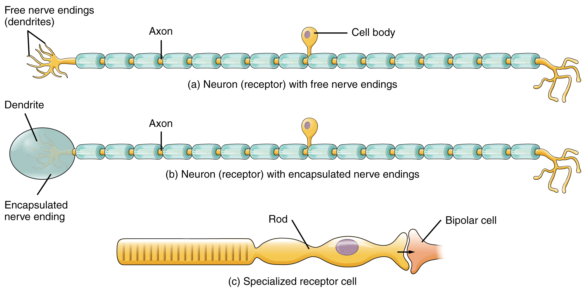
Another way that receptors can be classified is based on their location relative to the stimuli. Anexteroceptoris a receptor that is located near a stimulus in the external environment, such as the somatosensory receptors that are located in the skin. Aninteroceptoris one that interprets stimuli from internal organs and tissues, such as the receptors that sense the increase in blood pressure in the aorta or carotid sinus. Finally, aproprioceptoris a receptor located near a moving part of the body, such as a muscle, that interprets the positions of the tissues as they move.
#### Functional Receptor Types
A third classification of receptors is by how the receptor transduces stimuli into membrane potential changes. Stimuli are of three general types. Some stimuli are ions and macromolecules that affect transmembrane receptor proteins when these chemicals diffuse across the cell membrane. Some stimuli are physical variations in the environment that affect receptor cell membrane potentials. Other stimuli include the electromagnetic radiation from visible light. For humans, the only electromagnetic energy that is perceived by our eyes is visible light. Some other organisms have receptors that humans lack, such as the heat sensors of snakes, the ultraviolet light sensors of bees, or magnetic receptors in migratory birds.
Receptor cells can be further categorized on the basis of the type of stimuli they transduce. Chemical stimuli can be interpreted by achemoreceptorthat interprets chemical stimuli, such as an object’s taste or smell.Osmoreceptorsrespond to solute concentrations of body fluids. Additionally, pain is primarily a chemical sense that interprets the presence of chemicals from tissue damage, or similar intense stimuli, through anociceptor. Physical stimuli, such as pressure and vibration, as well as the sensation of sound and body position (balance), are interpreted through amechanoreceptor. Another physical stimulus that has its own type of receptor is temperature, which is sensed through athermoreceptorthat is either sensitive to temperatures above (heat) or below (cold) normal body temperature.
Ask anyone what the senses are, and they are likely to list the five major senses—taste, smell, touch, hearing, and sight. However, these are not all of the senses. The most obvious omission from this list is balance. Also, what is referred to simply as touch can be further subdivided into pressure, vibration, stretch, and hair-follicle position, on the basis of the type of mechanoreceptors that perceive these touch sensations. Other overlooked senses include temperature perception by thermoreceptors and pain perception by nociceptors.
Within the realm of physiology, senses can be classified as either general or specific. Ageneral senseis one that is distributed throughout the body and has receptor cells within the structures of other organs. Mechanoreceptors in the skin, muscles, or the walls of blood vessels are examples of this type. General senses often contribute to the sense of touch, as described above, or toproprioception(body movement) andkinesthesia(body movement), or to avisceral sense, which is most important to autonomic functions. Aspecial senseis one that has a specific organ devoted to it, namely the eye, inner ear, tongue, or nose.
Each of the senses is referred to as asensory modality. Modality refers to the way that information is encoded, which is similar to the idea of transduction. The main sensory modalities can be described on the basis of how each is transduced. The chemical senses are taste and smell. The general sense that is usually referred to as touch includes chemical sensation in the form of nociception, or pain. Pressure, vibration, muscle stretch, and the movement of hair by an external stimulus, are all sensed by mechanoreceptors. Hearing and balance are also sensed by mechanoreceptors. Finally, vision involves the activation of photoreceptors.
Listing all the different sensory modalities, which can number as many as 17, involves separating the five major senses into more specific categories, orsubmodalities, of the larger sense. An individual sensory modality represents the sensation of a specific type of stimulus. For example, the general sense of touch, which is known assomatosensation, can be separated into light pressure, deep pressure, vibration, itch, pain, temperature, or hair movement.
#### Gustation (Taste)
Only a few recognized submodalities exist within the sense of taste, orgustation. Until recently, only four tastes were recognized: sweet, salty, sour, and bitter. Research at the turn of the 20th century led to recognition of the fifth taste, umami, during the mid-1980s.Umamiis a Japanese word that means “delicious taste,” and is often translated to mean savory. Very recent research has suggested that there may also be a sixth taste for fats, or lipids.
Gustation is the special sense associated with the tongue. The surface of the tongue, along with the rest of the oral cavity, is lined by a stratified squamous epithelium. Raised bumps calledpapillae(singular = papilla) contain the structures for gustatory transduction. There are four types of papillae, based on their appearance (Figure \(\PageIndex{2}\)): circumvallate, foliate, filiform, and fungiform. Within the structure of the papillae aretaste budsthat contain specializedgustatory receptor cellsfor the transduction of taste stimuli. These receptor cells are sensitive to the chemicals contained within foods that are ingested, and they release neurotransmitters based on the amount of the chemical in the food. Neurotransmitters from the gustatory cells can activate sensory neurons in the facial, glossopharyngeal, and vagus cranial nerves.
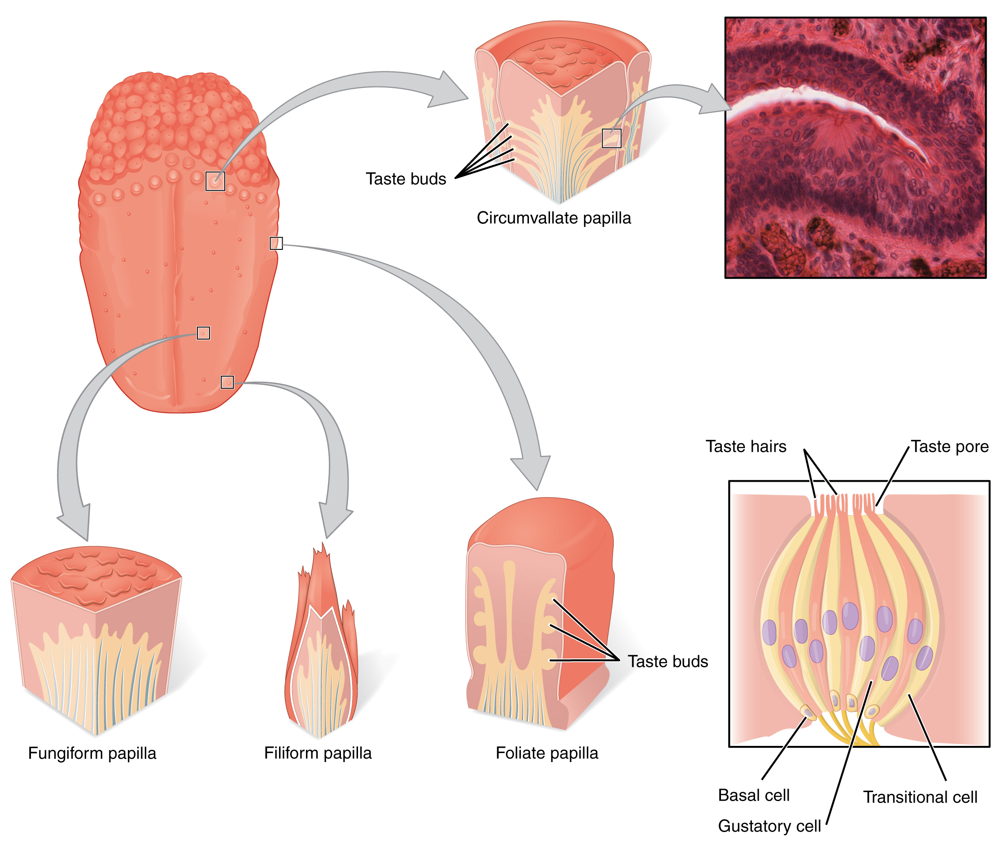
Salty taste is simply the perception of sodium ions (Na+) in the saliva. When you eat something salty, the salt crystals dissociate into the component ions Na+and Cl–, which dissolve into the saliva in your mouth. The Na+concentration becomes high outside the gustatory cells, creating a strong concentration gradient that drives the diffusion of the ion into the cells. The entry of Na+into these cells results in the depolarization of the cell membrane and the generation of a receptor potential.
Sour taste is the perception of H+concentration. Just as with sodium ions in salty flavors, these hydrogen ions enter the cell and trigger depolarization. Sour flavors are, essentially, the perception of acids in our food. Increasing hydrogen ion concentrations in the saliva (lowering saliva pH) triggers progressively stronger graded potentials in the gustatory cells. For example, orange juice—which contains citric acid—will taste sour because it has a pH value of approximately 3. Of course, it is often sweetened so that the sour taste is masked.
The first two tastes (salty and sour) are triggered by the cations Na+and H+. The other tastes result from food molecules binding to a G protein–coupled receptor. A G protein signal transduction system ultimately leads to depolarization of the gustatory cell. The sweet taste is the sensitivity of gustatory cells to the presence of glucose dissolved in the saliva. Other monosaccharides such as fructose, or artificial sweeteners such as aspartame (NutraSweet™), saccharine, or sucralose (Splenda™) also activate the sweet receptors. The affinity for each of these molecules varies, and some will taste sweeter than glucose because they bind to the G protein–coupled receptor differently.
Bitter taste is similar to sweet in that food molecules bind to G protein–coupled receptors. However, there are a number of different ways in which this can happen because there are a large diversity of bitter-tasting molecules. Some bitter molecules depolarize gustatory cells, whereas others hyperpolarize gustatory cells. Likewise, some bitter molecules increase G protein activation within the gustatory cells, whereas other bitter molecules decrease G protein activation. The specific response depends on which molecule is binding to the receptor.
One major group of bitter-tasting molecules are alkaloids.Alkaloidsare nitrogen containing molecules that are commonly found in bitter-tasting plant products, such as coffee, hops (in beer), tannins (in wine), tea, and aspirin. By containing toxic alkaloids, the plant is less susceptible to microbe infection and less attractive to herbivores.
Therefore, the function of bitter taste may primarily be related to stimulating the gag reflex to avoid ingesting poisons. Because of this, many bitter foods that are normally ingested are often combined with a sweet component to make them more palatable (cream and sugar in coffee, for example). The highest concentration of bitter receptors appear to be in the posterior tongue, where a gag reflex could still spit out poisonous food.
The taste known as umami is often referred to as the savory taste. Like sweet and bitter, it is based on the activation of G protein–coupled receptors by a specific molecule. The molecule that activates this receptor is the amino acid L-glutamate. Therefore, the umami flavor is often perceived while eating protein-rich foods. Not surprisingly, dishes that contain meat are often described as savory.
Once the gustatory cells are activated by the taste molecules, they release neurotransmitters onto the dendrites of sensory neurons. These neurons are part of the facial and glossopharyngeal cranial nerves, as well as a component within the vagus nerve dedicated to the gag reflex. The facial nerve connects to taste buds in the anterior third of the tongue. The glossopharyngeal nerve connects to taste buds in the posterior two thirds of the tongue. The vagus nerve connects to taste buds in the extreme posterior of the tongue, verging on the pharynx, which are more sensitive to noxious stimuli such as bitterness.
Watch this video to learn about Dr. Danielle Reed of the Monell Chemical Senses Center in Philadelphia, Pennsylvania, who became interested in science at an early age because of her sensory experiences. She recognized that her sense of taste was unique compared with other people she knew. Now, she studies the genetic differences between people and their sensitivities to taste stimuli. In the video, there is a brief image of a person sticking out their tongue, which has been covered with a colored dye. This is how Dr. Reed is able to visualize and count papillae on the surface of the tongue. People fall into two groups known as “tasters” and “non-tasters” based on the density of papillae on their tongue, which also indicates the number of taste buds. Non-tasters can taste food, but they are not as sensitive to certain tastes, such as bitterness. Dr. Reed discovered that she is a non-taster, which explains why she perceived bitterness differently than other people she knew. Are you very sensitive to tastes? Can you see any similarities among the members of your family?
#### Olfaction (Smell)
Like taste, the sense of smell, orolfaction, is also responsive to chemical stimuli. The olfactory receptor neurons are located in a small region within the superior nasal cavity (Figure \(\PageIndex{3}\)). This region is referred to as theolfactory epitheliumand contains bipolar sensory neurons. Eacholfactory sensory neuronhas dendrites that extend from the apical surface of the epithelium into the mucus lining the cavity. As airborne molecules are inhaled through the nose, they pass over the olfactory epithelial region and dissolve into the mucus. Theseodorant moleculesbind to proteins that keep them dissolved in the mucus and help transport them to the olfactory dendrites. The odorant–protein complex binds to a receptor protein within the cell membrane of an olfactory dendrite. These receptors are G protein–coupled, and will produce a graded membrane potential in the olfactory neurons.
The axon of an olfactory neuron extends from the basal surface of the epithelium, through an olfactory foramen in the cribriform plate of the ethmoid bone, and into the brain. The group of axons called the olfactory tract connect to theolfactory bulbon the ventral surface of the frontal lobe. From there, the axons split to travel to several brain regions. Some travel to the cerebrum, specifically to the primary olfactory cortex that is located in the inferior and medial areas of the temporal lobe. Others project to structures within the limbic system and hypothalamus, where smells become associated with long-term memory and emotional responses. This is how certain smells trigger emotional memories, such as the smell of food associated with one’s birthplace. Smell is the one sensory modality that does not synapse in the thalamus before connecting to the cerebral cortex. This intimate connection between the olfactory system and the cerebral cortex is one reason why smell can be a potent trigger of memories and emotion.
The nasal epithelium, including the olfactory cells, can be harmed by airborne toxic chemicals. Therefore, the olfactory neurons are regularly replaced within the nasal epithelium, after which the axons of the new neurons must find their appropriate connections in the olfactory bulb. These new axons grow along the axons that are already in place in the cranial nerve.
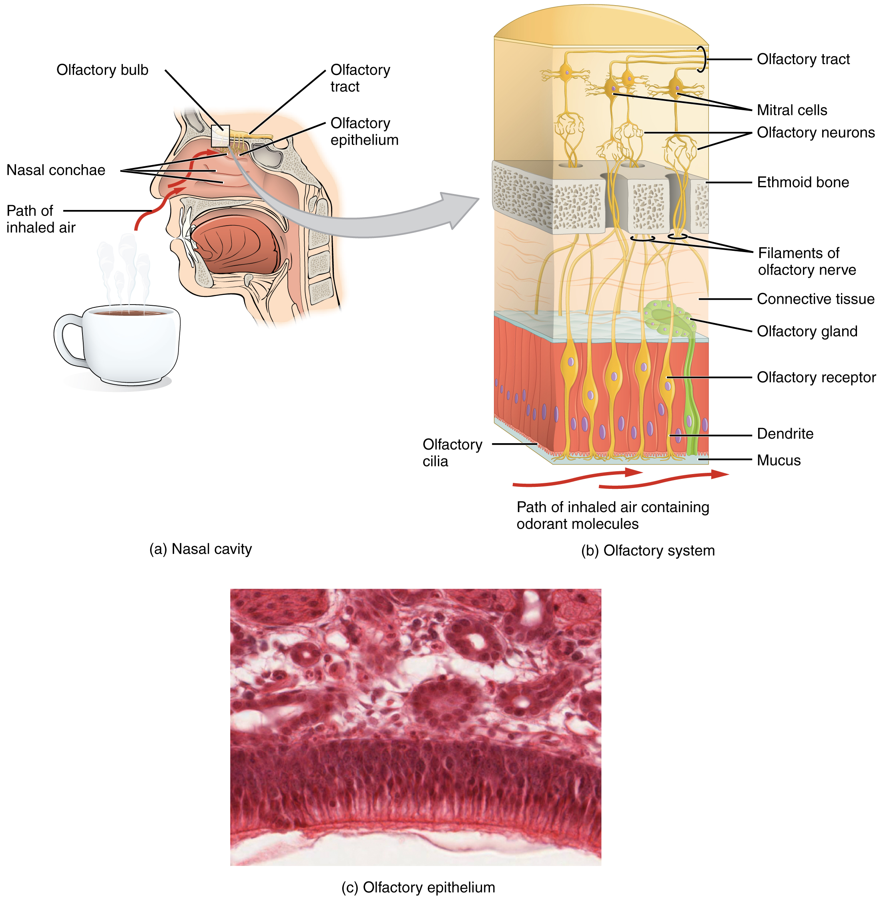
#### Olfactory System: Anosmia
Blunt force trauma to the face, such as that common in many car accidents, can lead to the loss of the olfactory nerve, and subsequently, loss of the sense of smell. This condition is known asanosmia. When the frontal lobe of the brain moves relative to the ethmoid bone, the olfactory tract axons may be sheared apart. Professional fighters often experience anosmia because of repeated trauma to face and head. In addition, certain pharmaceuticals, such as antibiotics, can cause anosmia by killing all the olfactory neurons at once. If no axons are in place within the olfactory nerve, then the axons from newly formed olfactory neurons have no guide to lead them to their connections within the olfactory bulb. There are temporary causes of anosmia, as well, such as those caused by inflammatory responses related to respiratory infections or allergies.
Loss of the sense of smell can result in food tasting bland. A person with an impaired sense of smell may require additional spice and seasoning levels for food to be tasted. Anosmia may also be related to some presentations of mild depression, because the loss of enjoyment of food may lead to a general sense of despair.
The ability of olfactory neurons to replace themselves decreases with age, leading to age-related anosmia. This explains why some elderly people salt their food more than younger people do. However, this increased sodium intake can increase blood volume and blood pressure, increasing the risk of cardiovascular diseases in the elderly.
#### Audition (Hearing)
Hearing, oraudition, is the transduction of sound waves into a neural signal that is made possible by the structures of the ear (Figure \(\PageIndex{4}\)). The large, fleshy structure on the lateral aspect of the head is known as theauricle. Some sources will also refer to this structure as the pinna, though that term is more appropriate for a structure that can be moved, such as the external ear of a cat. The C-shaped curves of the auricle direct sound waves toward the auditory canal. The canal enters the skull through the external auditory meatus of the temporal bone. At the end of the auditory canal is thetympanic membrane, or ear drum, which vibrates after it is struck by sound waves. The auricle, ear canal, and tympanic membrane are often referred to as theexternal ear. Themiddle earconsists of a space spanned by three small bones called theossicles. The three ossicles are themalleus,incus, andstapes, which are Latin names that roughly translate to hammer, anvil, and stirrup. The malleus is attached to the tympanic membrane and articulates with the incus. The incus, in turn, articulates with the stapes. The stapes is then attached to theinner ear, where the sound waves will be transduced into a neural signal. The middle ear is connected to the pharynx through the Eustachian tube, which helps equilibrate air pressure across the tympanic membrane. The tube is normally closed but will pop open when the muscles of the pharynx contract during swallowing or yawning.
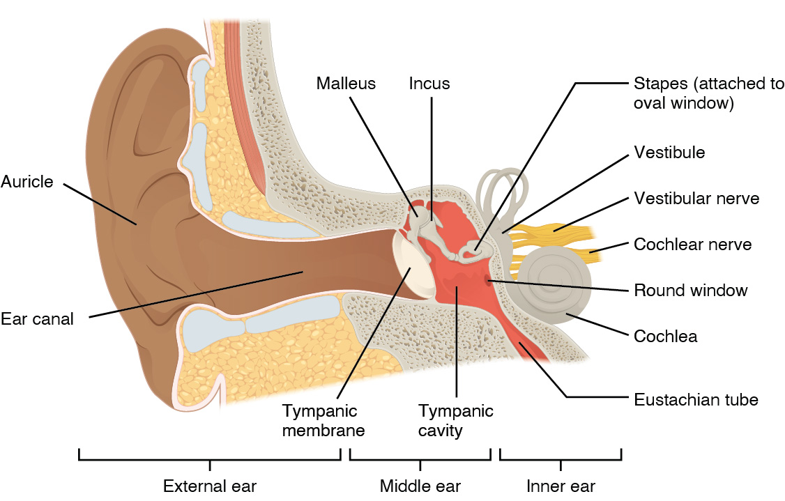
The inner ear is often described as a bony labyrinth, as it is composed of a series of canals embedded within the temporal bone. It has two separate regions, thecochleaand thevestibule, which are responsible for hearing and balance, respectively. The neural signals from these two regions are relayed to the brain stem through separate fiber bundles. However, these two distinct bundles travel together from the inner ear to the brain stem as the vestibulocochlear nerve. Sound is transduced into neural signals within the cochlear region of the inner ear, which contains the sensory neurons of thespiral ganglia. These ganglia are located within the spiral-shaped cochlea of the inner ear. The cochlea is attached to the stapes through theoval window.
The oval window is located at the beginning of a fluid-filled tube within the cochlea called thescala vestibuli. The scala vestibuli extends from the oval window, travelling above thecochlear duct, which is the central cavity of the cochlea that contains the sound-transducing neurons. At the uppermost tip of the cochlea, the scala vestibuli curves over the top of the cochlear duct. The fluid-filled tube, now called thescala tympani, returns to the base of the cochlea, this time travelling under the cochlear duct. The scala tympani ends at theround window, which is covered by a membrane that contains the fluid within the scala. As vibrations of the ossicles travel through the oval window, the fluid of the scala vestibuli and scala tympani moves in a wave-like motion. The frequency of the fluid waves match the frequencies of the sound waves (Figure \(\PageIndex{5}\)). The membrane covering the round window will bulge out or pucker in with the movement of the fluid within the scala tympani.
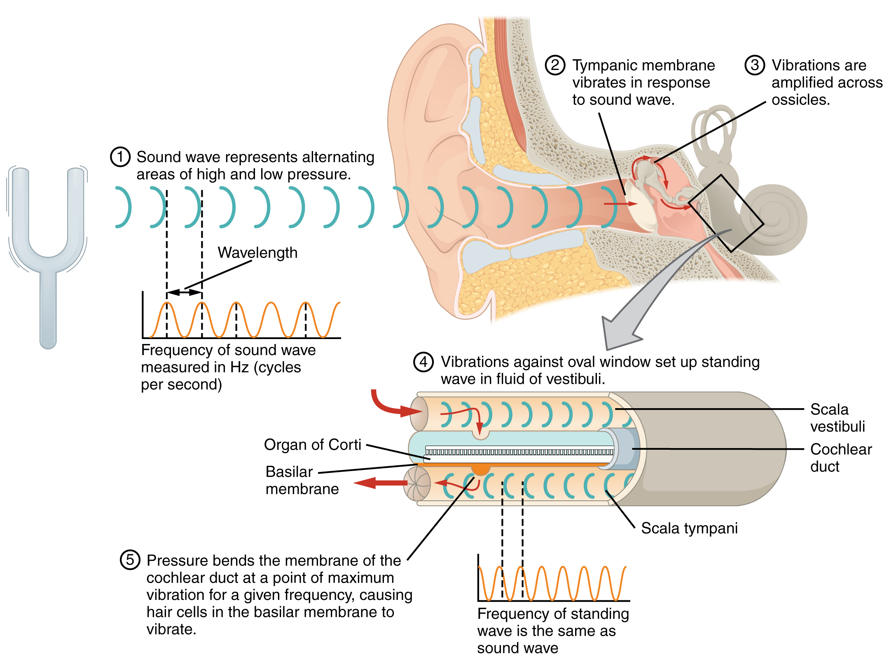
A cross-sectional view of the cochlea shows that the scala vestibuli and scala tympani run along both sides of the cochlear duct (Figure \(\PageIndex{6}\)). The cochlear duct contains severalorgans of Corti, which transduce the wave motion of the two scala into neural signals. The organs of Corti lie on top of thebasilar membrane, which is the side of the cochlear duct located between the organs of Corti and the scala tympani. As the fluid waves move through the scala vestibuli and scala tympani, the basilar membrane moves at a specific spot, depending on the frequency of the waves. Higher frequency waves move the region of the basilar membrane that is close to the base of the cochlea. Lower frequency waves move the region of the basilar membrane that is near the tip of the cochlea.
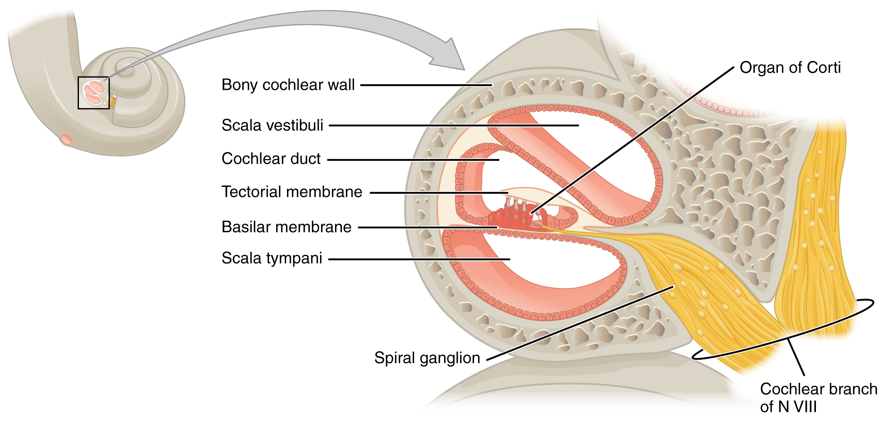
The organs of Corti containhair cells, which are named for the hair-likestereociliaextending from the cell’s apical surfaces (Figure \(\PageIndex{7}\)). The stereocilia are an array of microvilli-like structures arranged from tallest to shortest. Protein fibers tether adjacent hairs together within each array, such that the array will bend in response to movements of the basilar membrane. The stereocilia extend up from the hair cells to the overlyingtectorial membrane, which is attached medially to the organ of Corti. When the pressure waves from the scala move the basilar membrane, the tectorial membrane slides across the stereocilia. This bends the stereocilia either toward or away from the tallest member of each array. When the stereocilia bend toward the tallest member of their array, tension in the protein tethers opens ion channels in the hair cell membrane. This will depolarize the hair cell membrane, triggering nerve impulses that travel down the afferent nerve fibers attached to the hair cells. When the stereocilia bend toward the shortest member of their array, the tension on the tethers slackens and the ion channels close. When no sound is present, and the stereocilia are standing straight, a small amount of tension still exists on the tethers, keeping the membrane potential of the hair cell slightly depolarized.
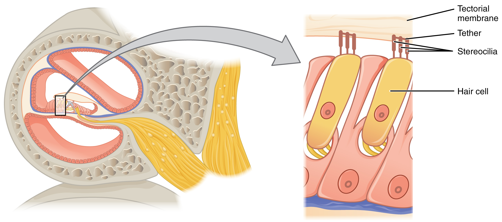
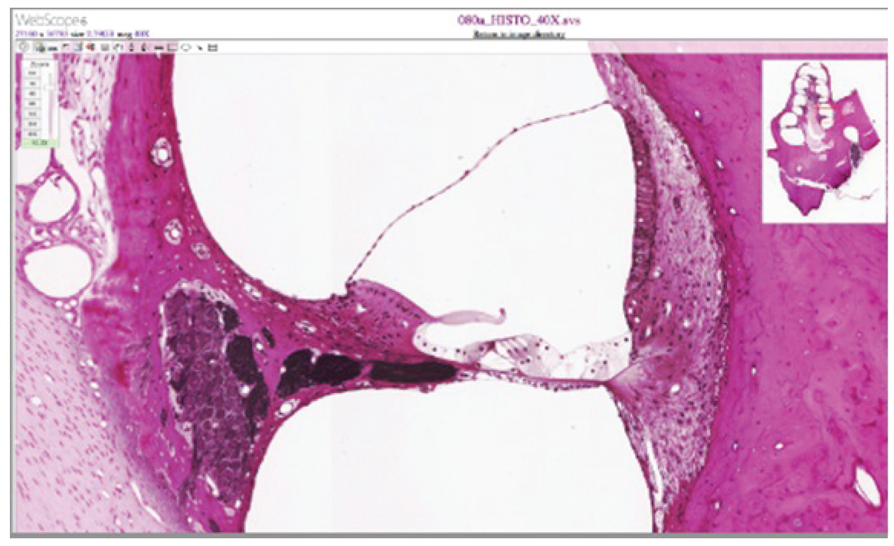
View theUniversity of Michigan WebScopeto explore the tissue sample in greater detail. The basilar membrane is the thin membrane that extends from the central core of the cochlea to the edge. What is anchored to this membrane so that they can be activated by movement of the fluids within the cochlea?
As stated above, a given region of the basilar membrane will only move if the incoming sound is at a specific frequency. Because the tectorial membrane only moves where the basilar membrane moves, the hair cells in this region will also only respond to sounds of this specific frequency. Therefore, as the frequency of a sound changes, different hair cells are activated all along the basilar membrane. The cochlea encodes auditory stimuli for frequencies between 20 and 20,000 Hz, which is the range of sound that human ears can detect. The unit of Hertz measures the frequency of sound waves in terms of cycles produced per second. Frequencies as low as 20 Hz are detected by hair cells at the apex, or tip, of the cochlea. Frequencies in the higher ranges of 20 KHz are encoded by hair cells at the base of the cochlea, close to the round and oval windows (Figure \(\PageIndex{9}\)). Most auditory stimuli contain a mixture of sounds at a variety of frequencies and intensities (represented by the amplitude of the sound wave). The hair cells along the length of the cochlear duct, which are each sensitive to a particular frequency, allow the cochlea to separate auditory stimuli by frequency, just as a prism separates visible light into its component colors.
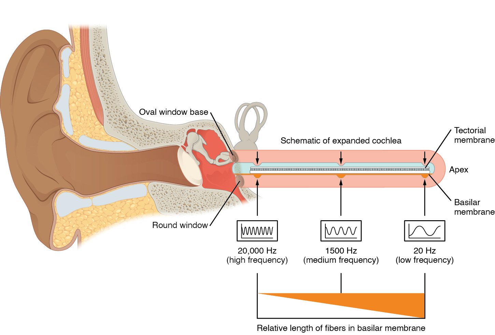
Watch this video to learn more about how the structures of the ear convert sound waves into a neural signal by moving the “hairs,” or stereocilia, of the cochlear duct. Specific locations along the length of the duct encode specific frequencies, or pitches. The brain interprets the meaning of the sounds we hear as music, speech, noise, etc. Which ear structures are responsible for the amplification and transfer of sound from the external ear to the inner ear?
Watch this animation to learn more about the inner ear and to see the cochlea unroll, with the base at the back of the image and the apex at the front. Specific wavelengths of sound cause specific regions of the basilar membrane to vibrate, much like the keys of a piano produce sound at different frequencies. Based on the animation, where do frequencies—from high to low pitches—cause activity in the hair cells within the cochlear duct?
#### Equilibrium (Balance)
Along with audition, the inner ear is responsible for encoding information aboutequilibrium, the sense of balance. A similar mechanoreceptor—a hair cell with stereocilia—senses head position, head movement, and whether our bodies are in motion. These cells are located within the vestibule of the inner ear. Head position is sensed by theutricleandsaccule, whereas head movement is sensed by thesemicircular canals. The neural signals generated in thevestibular ganglionare transmitted through the vestibulocochlear nerve to the brain stem and cerebellum.
The utricle and saccule are both largely composed ofmaculatissue (plural = maculae). The macula is composed of hair cells surrounded by support cells. The stereocilia of the hair cells extend into a viscous gel called theotolithic membrane(Figure \(\PageIndex{10}\)). On top of the otolithic membrane is a layer of calcium carbonate crystals, called otoliths. The otoliths essentially make the otolithic membrane top-heavy. The otolithic membrane moves separately from the macula in response to head movements. Tilting the head causes the otolithic membrane to slide over the macula in the direction of gravity. The moving otolithic membrane, in turn, bends the sterocilia, causing some hair cells to depolarize as others hyperpolarize. The exact position of the head is interpreted by the brain based on the pattern of hair-cell depolarization.
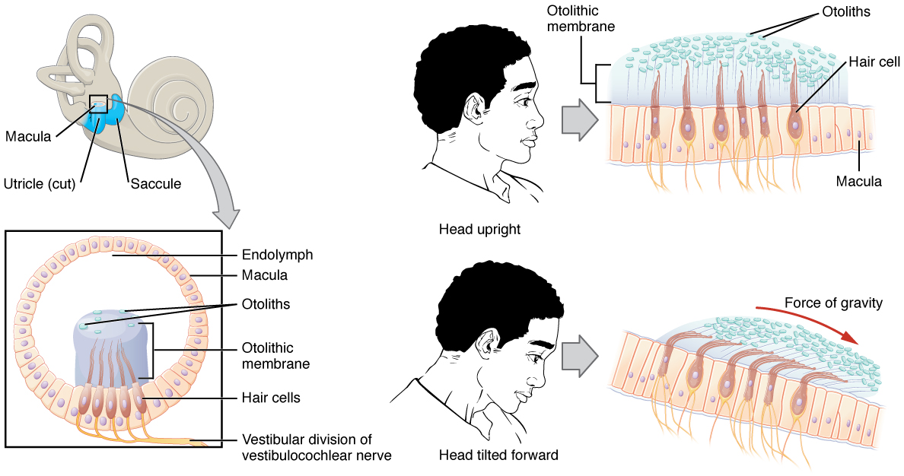
The semicircular canals are three ring-like extensions of the vestibule. One is oriented in the horizontal plane, whereas the other two are oriented in the vertical plane. The anterior and posterior vertical canals are oriented at approximately 45 degrees relative to the sagittal plane (Figure \(\PageIndex{11}\)). The base of each semicircular canal, where it meets with the vestibule, connects to an enlarged region known as theampulla. The ampulla contains the hair cells that respond to rotational movement, such as turning the head while saying “no.” The stereocilia of these hair cells extend into thecupula, a membrane that attaches to the top of the ampulla. As the head rotates in a plane parallel to the semicircular canal, the fluid lags, deflecting the cupula in the direction opposite to the head movement. The semicircular canals contain several ampullae, with some oriented horizontally and others oriented vertically. By comparing the relative movements of both the horizontal and vertical ampullae, the vestibular system can detect the direction of most head movements within three-dimensional (3-D) space.
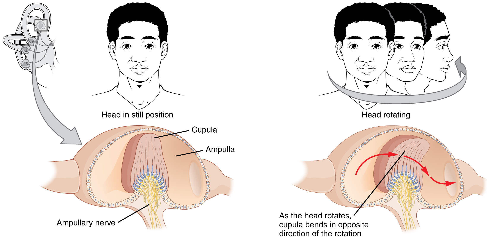
#### Somatosensation (Touch)
Somatosensation is considered a general sense, as opposed to the special senses discussed in this section. Somatosensation is the group of sensory modalities that are associated with touch, proprioception, and interoception. These modalities include pressure, vibration, light touch, tickle, itch, temperature, pain, proprioception, and kinesthesia. This means that its receptors are not associated with a specialized organ, but are instead spread throughout the body in a variety of organs. Many of the somatosensory receptors are located in the skin, but receptors are also found in muscles, tendons, joint capsules, ligaments, and in the walls of visceral organs.
Two types of somatosensory signals that are transduced by free nerve endings are pain and temperature. These two modalities use thermoreceptors and nociceptors to transduce temperature and pain stimuli, respectively. Temperature receptors are stimulated when local temperatures differ from body temperature. Some thermoreceptors are sensitive to just cold and others to just heat. Nociception is the sensation of potentially damaging stimuli. Mechanical, chemical, or thermal stimuli beyond a set threshold will elicit painful sensations. Stressed or damaged tissues release chemicals that activate receptor proteins in the nociceptors. For example, the sensation of heat associated with spicy foods involvescapsaicin, the active molecule in hot peppers. Capsaicin molecules bind to a transmembrane ion channel in nociceptors that is sensitive to temperatures above 37°C. The dynamics of capsaicin binding with this transmembrane ion channel is unusual in that the molecule remains bound for a long time. Because of this, it will decrease the ability of other stimuli to elicit pain sensations through the activated nociceptor. For this reason, capsaicin can be used as a topical analgesic, such as in products such as Icy Hot™.
If you drag your finger across a textured surface, the skin of your finger will vibrate. Such low frequency vibrations are sensed by mechanoreceptors called Merkel cells, also known as type I cutaneous mechanoreceptors. Merkel cells are located in the stratum basale of the epidermis. Deep pressure and vibration is transduced by lamellated (Pacinian) corpuscles, which are receptors with encapsulated endings found deep in the dermis, or subcutaneous tissue. Light touch is transduced by the encapsulated endings known as tactile (Meissner) corpuscles. Follicles are also wrapped in a plexus of nerve endings known as the hair follicle plexus. These nerve endings detect the movement of hair at the surface of the skin, such as when an insect may be walking along the skin. Stretching of the skin is transduced by stretch receptors known as bulbous corpuscles. Bulbous corpuscles are also known as Ruffini corpuscles, or type II cutaneous mechanoreceptors.
Other somatosensory receptors are found in the joints and muscles. Stretch receptors monitor the stretching of tendons, muscles, and the components of joints. For example, have you ever stretched your muscles before or after exercise and noticed that you can only stretch so far before your muscles spasm back to a less stretched state? This spasm is a reflex that is initiated by stretch receptors to avoid muscle tearing. Such stretch receptors can also prevent over-contraction of a muscle. In skeletal muscle tissue, these stretch receptors are called muscle spindles. Golgi tendon organs similarly transduce the stretch levels of tendons. Bulbous corpuscles are also present in joint capsules, where they measure stretch in the components of the skeletal system within the joint. The types of nerve endings, their locations, and the stimuli they transduce are presented in Table \(\PageIndex{1}\).
| Name | Historical (eponymous) name | Location(s) | Stimuli |
|---|---|---|---|
| Free nerve endings | * | Dermis, cornea, tongue, joint capsules, visceral organs | Pain, temperature, mechanical deformation |
| Mechanoreceptors | Merkel’s discs | Epidermal–dermal junction, mucosal membranes | Low frequency vibration (5–15 Hz) |
| Bulbous corpuscle | Ruffini’s corpuscle | Dermis, joint capsules | Stretch |
| Tactile corpuscle | Meissner’s corpuscle | Papillary dermis, especially in the fingertips and lips | Light touch, vibrations below 50 Hz |
| Lamellated corpuscle | Pacinian corpuscle | Deep dermis, subcutaneous tissue | Deep pressure, high-frequency vibration (around 250 Hz) |
| Hair follicle plexus | * | Wrapped around hair follicles in the dermis | Movement of hair |
| Muscle spindle | * | In line with skeletal muscle fibers | Muscle contraction and stretch |
| Tendon stretch organ | Golgi tendon organ | In line with tendons | Stretch of tendons |
Visionis the special sense of sight that is based on the transduction of light stimuli received through the eyes. The eyes are located within either orbit in the skull. The bony orbits surround the eyeballs, protecting them and anchoring the soft tissues of the eye (Figure \(\PageIndex{12}\)). The eyelids, with lashes at their leading edges, help to protect the eye from abrasions by blocking particles that may land on the surface of the eye. The inner surface of each lid is a thin membrane known as thepalpebral conjunctiva. The conjunctiva extends over the white areas of the eye (the sclera), connecting the eyelids to the eyeball. Tears are produced by thelacrimal gland, located just inside the orbit, superior and lateral to the eyeball. Tears produced by this gland flow through thelacrimal ductto the medial corner of the eye, where the tears flow over the conjunctiva, washing away foreign particles.
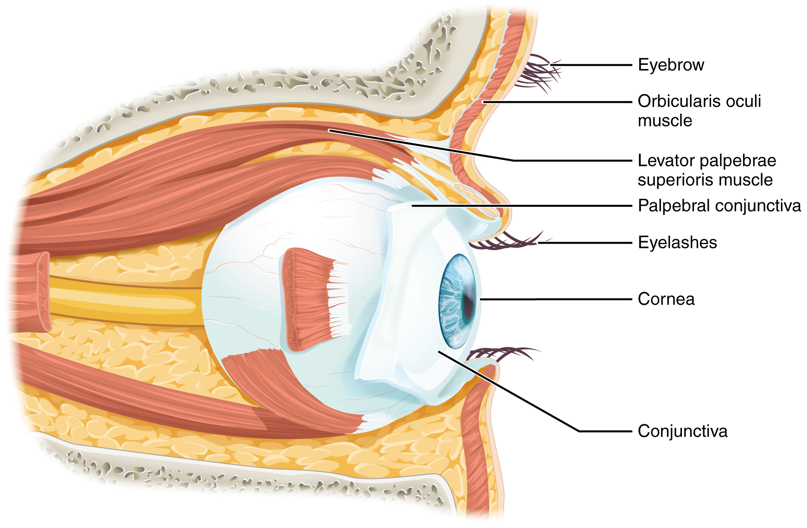
Movement of the eye within the orbit is accomplished by the contraction of sixextraocular musclesthat originate from the bones of the orbit and insert into the surface of the eyeball (Figure \(\PageIndex{13}\)). Four of the muscles are arranged at the cardinal points around the eye and are named for those locations. They are thesuperior rectus,medial rectus,inferior rectus, andlateral rectus. When each of these muscles contract, the eye moves toward the contracting muscle. For example, when the superior rectus contracts, the eye rotates to look up. Thesuperior obliqueoriginates at the posterior orbit, near the origin of the four rectus muscles. However, the tendon of the oblique muscles threads through a pulley-like piece of cartilage known as thetrochlea. The tendon inserts obliquely into the superior surface of the eye. The angle of the tendon through the trochlea means that contraction of the superior oblique rotates the eye laterally. Theinferior obliquemuscle originates from the floor of the orbit and inserts into the inferolateral surface of the eye. When it contracts, it laterally rotates the eye, in opposition to the superior oblique. Rotation of the eye by the two oblique muscles is necessary because the eye is not perfectly aligned on the sagittal plane. When the eye looks up or down, the eye must also rotate slightly to compensate for the superior rectus pulling at approximately a 20-degree angle, rather than straight up. The same is true for the inferior rectus, which is compensated by contraction of the inferior oblique. A seventh muscle in the orbit is thelevator palpebrae superioris, which is responsible for elevating and retracting the upper eyelid, a movement that usually occurs in concert with elevation of the eye by the superior rectus (see Figure \(\PageIndex{12}\)).
The extraocular muscles are innervated by three cranial nerves. The lateral rectus, which causes abduction of the eye, is innervated by the abducens nerve. The superior oblique is innervated by the trochlear nerve. All of the other muscles are innervated by the oculomotor nerve, as is the levator palpebrae superioris. The motor nuclei of these cranial nerves connect to the brain stem, which coordinates eye movements.
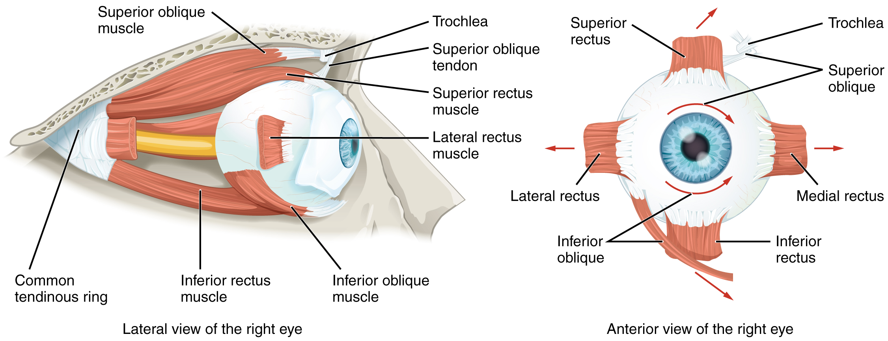
The eye itself is a hollow sphere composed of three layers of tissue. The outermost layer is thefibrous tunic, which includes the whitescleraand clearcornea. The sclera accounts for five sixths of the surface of the eye, most of which is not visible, though humans are unique compared with many other species in having so much of the “white of the eye” visible (Figure \(\PageIndex{14}\)). The transparent cornea covers the anterior tip of the eye and allows light to enter the eye. The middle layer of the eye is thevascular tunic, which is mostly composed of the choroid, ciliary body, and iris. Thechoroidis a layer of highly vascularized connective tissue that provides a blood supply to the eyeball. The choroid is posterior to theciliary body, a muscular structure that is attached to thelensby suspensory ligaments, orzonule fibers. These two structures bend the lens, allowing it to focus light on the back of the eye. Overlaying the ciliary body, and visible in the anterior eye, is theiris—the colored part of the eye. The iris is a smooth muscle that opens or closes thepupil, which is the hole at the center of the eye that allows light to enter. The iris constricts the pupil in response to bright light and dilates the pupil in response to dim light. The innermost layer of the eye is theneural tunic, orretina, which contains the nervous tissue responsible for photoreception.
The eye is also divided into two cavities: the anterior cavity and the posterior cavity. The anterior cavity is the space between the cornea and lens, including the iris and ciliary body. It is filled with a watery fluid called theaqueous humor. The posterior cavity is the space behind the lens that extends to the posterior side of the interior eyeball, where the retina is located. The posterior cavity is filled with a more viscous fluid called thevitreous humor.
The retina is composed of several layers and contains specialized cells for the initial processing of visual stimuli. The photoreceptors (rods and cones) change their membrane potential when stimulated by light energy. The change in membrane potential alters the amount of neurotransmitter that the photoreceptor cells release ontobipolar cellsin theouter synaptic layer. It is the bipolar cell in the retina that connects a photoreceptor to aretinal ganglion cell (RGC)in theinner synaptic layer. There,amacrine cellsadditionally contribute to retinal processing before an action potential is produced by the RGC. The axons of RGCs, which lie at the innermost layer of the retina, collect at theoptic discand leave the eye as theoptic nerve(see Figure \(\PageIndex{14}\)). Because these axons pass through the retina, there are no photoreceptors at the very back of the eye, where the optic nerve begins. This creates a “blind spot” in the retina, and a corresponding blind spot in our visual field.
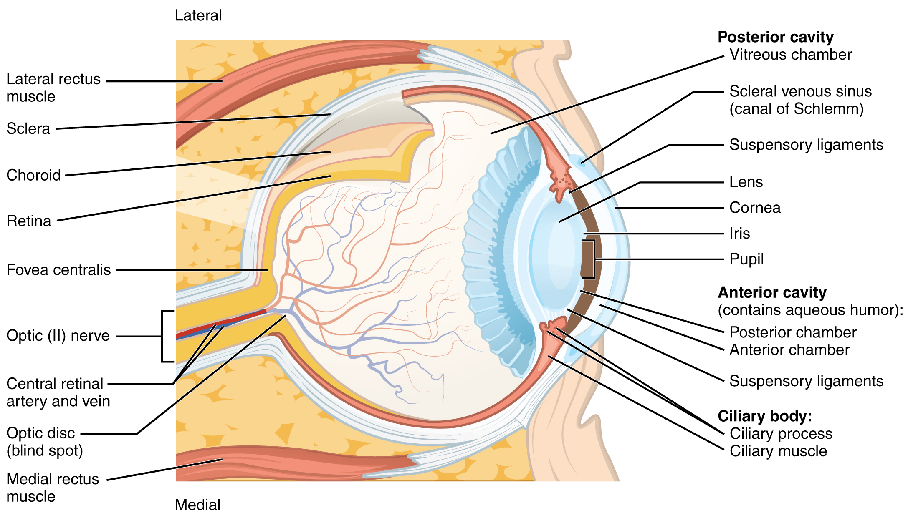
Note that the photoreceptors in the retina (rods and cones) are located behind the axons, RGCs, bipolar cells, and retinal blood vessels. A significant amount of light is absorbed by these structures before the light reaches the photoreceptor cells. However, at the exact center of the retina is a small area known as thefovea. At the fovea, the retina lacks the supporting cells and blood vessels, and only contains photoreceptors. Therefore,visual acuity, or the sharpness of vision, is greatest at the fovea. This is because the fovea is where the least amount of incoming light is absorbed by other retinal structures (see Figure \(\PageIndex{14}\)). As one moves in either direction from this central point of the retina, visual acuity drops significantly. In addition, each photoreceptor cell of the fovea is connected to a single RGC. Therefore, this RGC does not have to integrate inputs from multiple photoreceptors, which reduces the accuracy of visual transduction. Toward the edges of the retina, several photoreceptors converge on RGCs (through the bipolar cells) up to a ratio of 50 to 1. The difference in visual acuity between the fovea and peripheral retina is easily evidenced by looking directly at a word in the middle of this paragraph. The visual stimulus in the middle of the field of view falls on the fovea and is in the sharpest focus. Without moving your eyes off that word, notice that words at the beginning or end of the paragraph are not in focus. The images in your peripheral vision are focused by the peripheral retina, and have vague, blurry edges and words that are not as clearly identified. As a result, a large part of the neural function of the eyes is concerned with moving the eyes and head so that important visual stimuli are centered on the fovea.
Light falling on the retina causes chemical changes to pigment molecules in the photoreceptors, ultimately leading to a change in the activity of the RGCs. Photoreceptor cells have two parts, theinner segmentand theouter segment(Figure \(\PageIndex{15}\)). The inner segment contains the nucleus and other common organelles of a cell, whereas the outer segment is a specialized region in which photoreception takes place. There are two types of photoreceptors—rods and cones—which differ in the shape of their outer segment. The rod-shaped outer segments of therod photoreceptorcontain a stack of membrane-bound discs that contain the photosensitive pigmentrhodopsin. The cone-shaped outer segments of thecone photoreceptorcontain their photosensitive pigments in infoldings of the cell membrane. There are three cone photopigments, calledopsins, which are each sensitive to a particular wavelength of light. The wavelength of visible light determines its color. The pigments in human eyes are specialized in perceiving three different primary colors: red, green, and blue.
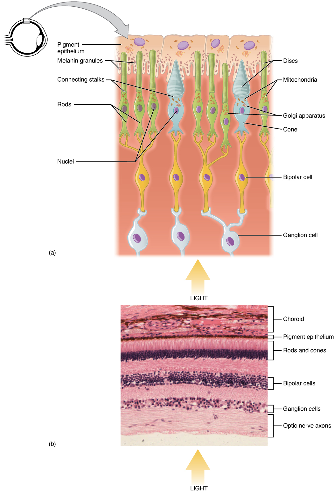
At the molecular level, visual stimuli cause changes in the photopigment molecule that lead to changes in membrane potential of the photoreceptor cell. A single unit of light is called aphoton, which is described in physics as a packet of energy with properties of both a particle and a wave. The energy of a photon is represented by its wavelength, with each wavelength of visible light corresponding to a particular color. Visible light is electromagnetic radiation with a wavelength between 380 and 720 nm. Wavelengths of electromagnetic radiation longer than 720 nm fall into the infrared range, whereas wavelengths shorter than 380 nm fall into the ultraviolet range. Light with a wavelength of 380 nm is blue whereas light with a wavelength of 720 nm is dark red. All other colors fall between red and blue at various points along the wavelength scale.
Opsin pigments are actually transmembrane proteins that contain a cofactor known asretinal. Retinal is a hydrocarbon molecule related to vitamin A. When a photon hits retinal, the long hydrocarbon chain of the molecule is biochemically altered. Specifically, photons cause some of the double-bonded carbons within the chain to switch from acisto atransconformation. This process is calledphotoisomerization. Before interacting with a photon, retinal’s flexible double-bonded carbons are in thecisconformation. This molecule is referred to as 11-cis-retinal. A photon interacting with the molecule causes the flexible double-bonded carbons to change to thetrans- conformation, forming all-trans-retinal, which has a straight hydrocarbon chain (Figure \(\PageIndex{16}\)).
The shape change of retinal in the photoreceptors initiates visual transduction in the retina. Activation of retinal and the opsin proteins result in activation of a G protein. The G protein changes the membrane potential of the photoreceptor cell, which then releases less neurotransmitter into the outer synaptic layer of the retina. Until the retinal molecule is changed back to the 11-cis-retinal shape, the opsin cannot respond to light energy, which is called bleaching. When a large group of photopigments is bleached, the retina will send information as if opposing visual information is being perceived. After a bright flash of light, afterimages are usually seen in negative. The photoisomerization is reversed by a series of enzymatic changes so that the retinal responds to more light energy.
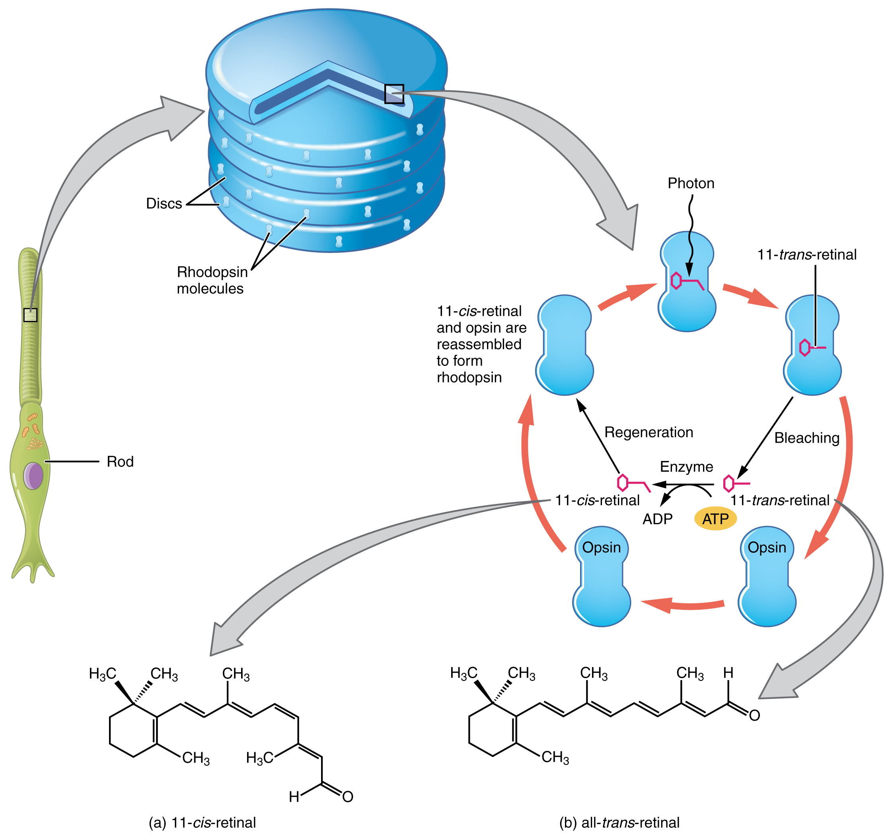
The opsins are sensitive to limited wavelengths of light. Rhodopsin, the photopigment in rods, is most sensitive to light at a wavelength of 498 nm. The three color opsins have peak sensitivities of 564 nm, 534 nm, and 420 nm corresponding roughly to the primary colors of red, green, and blue (Figure \(\PageIndex{17}\)). The absorbance of rhodopsin in the rods is much more sensitive than in the cone opsins; specifically, rods are sensitive to vision in low light conditions, and cones are sensitive to brighter conditions. In normal sunlight, rhodopsin will be constantly bleached while the cones are active. In a darkened room, there is not enough light to activate cone opsins, and vision is entirely dependent on rods. Rods are so sensitive to light that a single photon can result in an action potential from a rod’s corresponding RGC.
The three types of cone opsins, being sensitive to different wavelengths of light, provide us with color vision. By comparing the activity of the three different cones, the brain can extract color information from visual stimuli. For example, a bright blue light that has a wavelength of approximately 450 nm would activate the “red” cones minimally, the “green” cones marginally, and the “blue” cones predominantly. The relative activation of the three different cones is calculated by the brain, which perceives the color as blue. However, cones cannot react to low-intensity light, and rods do not sense the color of light. Therefore, our low-light vision is—in essence—in grayscale. In other words, in a dark room, everything appears as a shade of gray. If you think that you can see colors in the dark, it is most likely because your brain knows what color something is and is relying on that memory.

Watch this video to learn more about a transverse section through the brain that depicts the visual pathway from the eye to the occipital cortex. The first half of the pathway is the projection from the RGCs through the optic nerve to the lateral geniculate nucleus in the thalamus on either side. This first fiber in the pathway synapses on a thalamic cell that then projects to the visual cortex in the occipital lobe where “seeing,” or visual perception, takes place. This video gives an abbreviated overview of the visual system by concentrating on the pathway from the eyes to the occipital lobe. The video makes the statement (at 0:45) that “specialized cells in the retina called ganglion cells convert the light rays into electrical signals.” What aspect of retinal processing is simplified by that statement? Explain your answer.
Once any sensory cell transduces a stimulus into a nerve impulse, that impulse has to travel along axons to reach the CNS. In many of the special senses, the axons leaving the sensory receptors have atopographicalarrangement, meaning that the location of the sensory receptor relates to the location of the axon in the nerve. For example, in the retina, axons from RGCs in the fovea are located at the center of the optic nerve, where they are surrounded by axons from the more peripheral RGCs.
Generally, spinal nerves contain afferent axons from sensory receptors in the periphery, such as from the skin, mixed with efferent axons travelling to the muscles or other effector organs. As the spinal nerve nears the spinal cord, it splits into dorsal and ventral roots. The dorsal root contains only the axons of sensory neurons, whereas the ventral roots contain only the axons of the motor neurons. Some of the branches will synapse with local neurons in the dorsal root ganglion, posterior (dorsal) horn, or even the anterior (ventral) horn, at the level of the spinal cord where they enter. Other branches will travel a short distance up or down the spine to interact with neurons at other levels of the spinal cord. A branch may also turn into the posterior (dorsal) column of the white matter to connect with the brain. For the sake of convenience, we will use the terms ventral and dorsal in reference to structures within the spinal cord that are part of these pathways. This will help to underscore the relationships between the different components. Typically, spinal nerve systems that connect to the brain arecontralateral, in that the right side of the body is connected to the left side of the brain and the left side of the body to the right side of the brain.
Cranial nerves convey specific sensory information from the head and neck directly to the brain. Whereas spinal information is contralateral, cranial nerve systems, with some exceptions, are mostlyipsilateral, meaning that a cranial nerve on the right side of the head is connected to the right side of the brain. Some cranial nerves contain only sensory axons, such as the olfactory, optic, and vestibulocochlear nerves. Other cranial nerves contain both sensory and motor axons, including the trigeminal, facial, glossopharyngeal, and vagus nerves (however, the vagus nerve is not associated with the somatic nervous system). The general senses of somatosensation for the face travel through the trigeminal system.
📖 OpenStax Anatomy & Physiology 2e, Section 14.2. openstax.org · CC BY 4.0
- Describe the pathways that sensory systems follow into the central nervous system
- Differentiate between the two major ascending pathways in the spinal cord
- Describe the pathway of somatosensory input from the face and compare it to the ascending pathways in the spinal cord
- Explain topographical representations of sensory information in at least two systems
- Describe two pathways of visual processing and the functions associated with each
Specific regions of the CNS coordinate different somatic processes using sensory inputs and motor outputs of peripheral nerves. A simple case is a reflex caused by a synapse between a dorsal sensory neuron axon and a motor neuron in the ventral horn. More complex arrangements are possible to integrate peripheral sensory information with higher processes. The important regions of the CNS that play a role in somatic processes can be separated into the spinal cord brain stem, diencephalon, cerebral cortex, and subcortical structures.
#### Spinal Cord and Brain Stem
A sensory pathway that carries peripheral sensations to the brain is referred to as anascending pathway, or ascending tract. The various sensory modalities each follow specific pathways through the CNS. Tactile and other somatosensory stimuli activate receptors in the skin, muscles, tendons, and joints throughout the entire body. However, the somatosensory pathways are divided into two separate systems on the basis of the location of the receptor neurons. Somatosensory stimuli from below the neck pass along the sensory pathways of the spinal cord, whereas somatosensory stimuli from the head and neck travel through the cranial nerves—specifically, the trigeminal system.
Thedorsal column system(sometimes referred to as the dorsal column–medial lemniscus) and thespinothalamic tractare two major pathways that bring sensory information to the brain (Figure \(\PageIndex{1}\)). The sensory pathways in each of these systems are composed of three successive neurons.
The dorsal column system begins with the axon of a dorsal root ganglion neuron entering the dorsal root and joining the dorsal column white matter in the spinal cord. As axons of this pathway enter the dorsal column, they take on a positional arrangement so that axons from lower levels of the body position themselves medially, whereas axons from upper levels of the body position themselves laterally. The dorsal column is separated into two component tracts, thefasciculus gracilisthat contains axons from the legs and lower body, and thefasciculus cuneatusthat contains axons from the upper body and arms.
The axons in the dorsal column terminate in the nuclei of the medulla, where each synapses with the second neuron in their respective pathway. Thenucleus gracilisis the target of fibers in the fasciculus gracilis, whereas thenucleus cuneatusis the target of fibers in the fasciculus cuneatus. The second neuron in the system projects from one of the two nuclei and thendecussates, or crosses the midline of the medulla. These axons then continue to ascend the brain stem as a bundle called themedial lemniscus. These axons terminate in the thalamus, where each synapses with the third neuron in their respective pathway. The third neuron in the system projects its axons to the postcentral gyrus of the cerebral cortex, where somatosensory stimuli are initially processed and the conscious perception of the stimulus occurs.
The spinothalamic tract also begins with neurons in a dorsal root ganglion. These neurons extend their axons to the dorsal horn, where they synapse with the second neuron in their respective pathway. The name “spinothalamic” comes from this second neuron, which has its cell body in the spinal cord gray matter and connects to the thalamus. Axons from these second neurons then decussate within the spinal cord and ascend to the brain and enter the thalamus, where each synapses with the third neuron in its respective pathway. The neurons in the thalamus then project their axons to the spinothalamic tract, which synapses in the postcentral gyrus of the cerebral cortex.
These two systems are similar in that they both begin with dorsal root ganglion cells, as with most general sensory information. The dorsal column system is primarily responsible for touch sensations and proprioception, whereas the spinothalamic tract pathway is primarily responsible for pain and temperature sensations. Another similarity is that the second neurons in both of these pathways are contralateral, because they project across the midline to the other side of the brain or spinal cord. In the dorsal column system, this decussation takes place in the brain stem; in the spinothalamic pathway, it takes place in the spinal cord at the same spinal cord level at which the information entered. The third neurons in the two pathways are essentially the same. In both, the second neuron synapses in the thalamus, and the thalamic neuron projects to the somatosensory cortex.
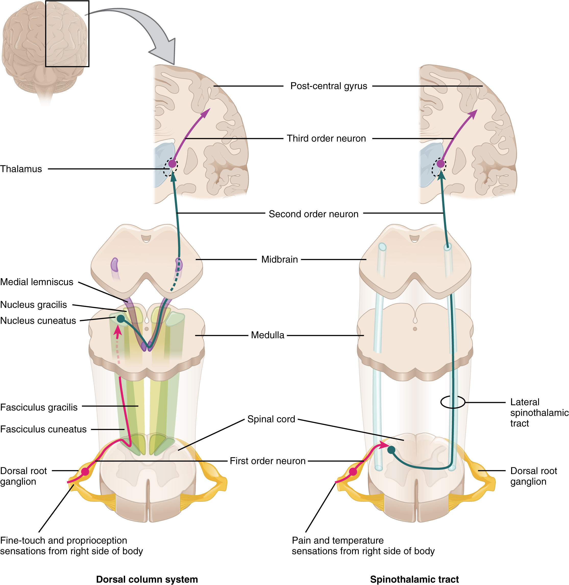
The trigeminal pathway carries somatosensory information from the face, head, mouth, and nasal cavity. As with the previously discussed nerve tracts, the sensory pathways of the trigeminal pathway each involve three successive neurons. First, axons from the trigeminal ganglion enter the brain stem at the level of the pons. These axons project to one of three locations. Thespinal trigeminal nucleusof the medulla receives information similar to that carried by spinothalamic tract, such as pain and temperature sensations. Other axons go to either thechief sensory nucleusin the pons or themesencephalic nucleiin the midbrain. These nuclei receive information like that carried by the dorsal column system, such as touch, pressure, vibration, and proprioception. Axons from the second neuron decussate and ascend to the thalamus along the trigeminothalamic tract. In the thalamus, each axon synapses with the third neuron in its respective pathway. Axons from the third neuron then project from the thalamus to the primary somatosensory cortex of the cerebrum.
The sensory pathway for gustation travels along the facial and glossopharyngeal cranial nerves, which synapse with neurons of thesolitary nucleusin the brain stem. Axons from the solitary nucleus then project to theventral posterior nucleusof the thalamus. Finally, axons from the ventral posterior nucleus project to the gustatory cortex of the cerebral cortex, where taste is processed and consciously perceived.
The sensory pathway for audition travels along the vestibulocochlear nerve, which synapses with neurons in the cochlear nuclei of the superior medulla. Within the brain stem, input from either ear is combined to extract location information from the auditory stimuli. Whereas the initial auditory stimuli received at the cochlea strictly represent the frequency—or pitch—of the stimuli, the locations of sounds can be determined by comparing information arriving at both ears.
Sound localization is a feature of central processing in the auditory nuclei of the brain stem. Sound localization is achieved by the brain calculating theinteraural time differenceand theinteraural intensity difference. A sound originating from a specific location will arrive at each ear at different times, unless the sound is directly in front of the listener. If the sound source is slightly to the left of the listener, the sound will arrive at the left ear microseconds before it arrives at the right ear (Figure \(\PageIndex{2}\)). This time difference is an example of an interaural time difference. Also, the sound will be slightly louder in the left ear than in the right ear because some of the sound waves reaching the opposite ear are blocked by the head. This is an example of an interaural intensity difference.
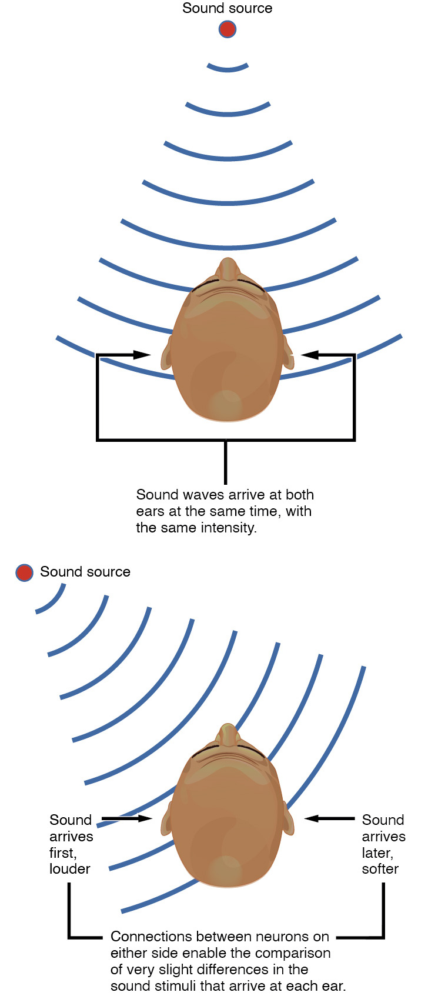
Auditory processing continues on to a nucleus in the midbrain called theinferior colliculus. Axons from the inferior colliculus project to two locations, the thalamus and thesuperior colliculus. Themedial geniculate nucleusof the thalamus receives the auditory information and then projects that information to the auditory cortex in the temporal lobe of the cerebral cortex. The superior colliculus receives input from the visual and somatosensory systems, as well as the ears, to initiate stimulation of the muscles that turn the head and neck toward the auditory stimulus.
Balance is coordinated through the vestibular system, the nerves of which are composed of axons from the vestibular ganglion that carries information from the utricle, saccule, and semicircular canals. The system contributes to controlling head and neck movements in response to vestibular signals. An important function of the vestibular system is coordinating eye and head movements to maintain visual attention. Most of the axons terminate in thevestibular nucleiof the medulla. Some axons project from the vestibular ganglion directly to the cerebellum, with no intervening synapse in the vestibular nuclei. The cerebellum is primarily responsible for initiating movements on the basis of equilibrium information.
Neurons in the vestibular nuclei project their axons to targets in the brain stem. One target is the reticular formation, which influences respiratory and cardiovascular functions in relation to body movements. A second target of the axons of neurons in the vestibular nuclei is the spinal cord, which initiates the spinal reflexes involved with posture and balance. To assist the visual system, fibers of the vestibular nuclei project to the oculomotor, trochlear, and abducens nuclei to influence signals sent along the cranial nerves. These connections constitute the pathway of thevestibulo-ocular reflex (VOR), which compensates for head and body movement by stabilizing images on the retina (Figure \(\PageIndex{3}\)). Finally, the vestibular nuclei project to the thalamus to join the proprioceptive pathway of the dorsal column system, allowing conscious perception of equilibrium.
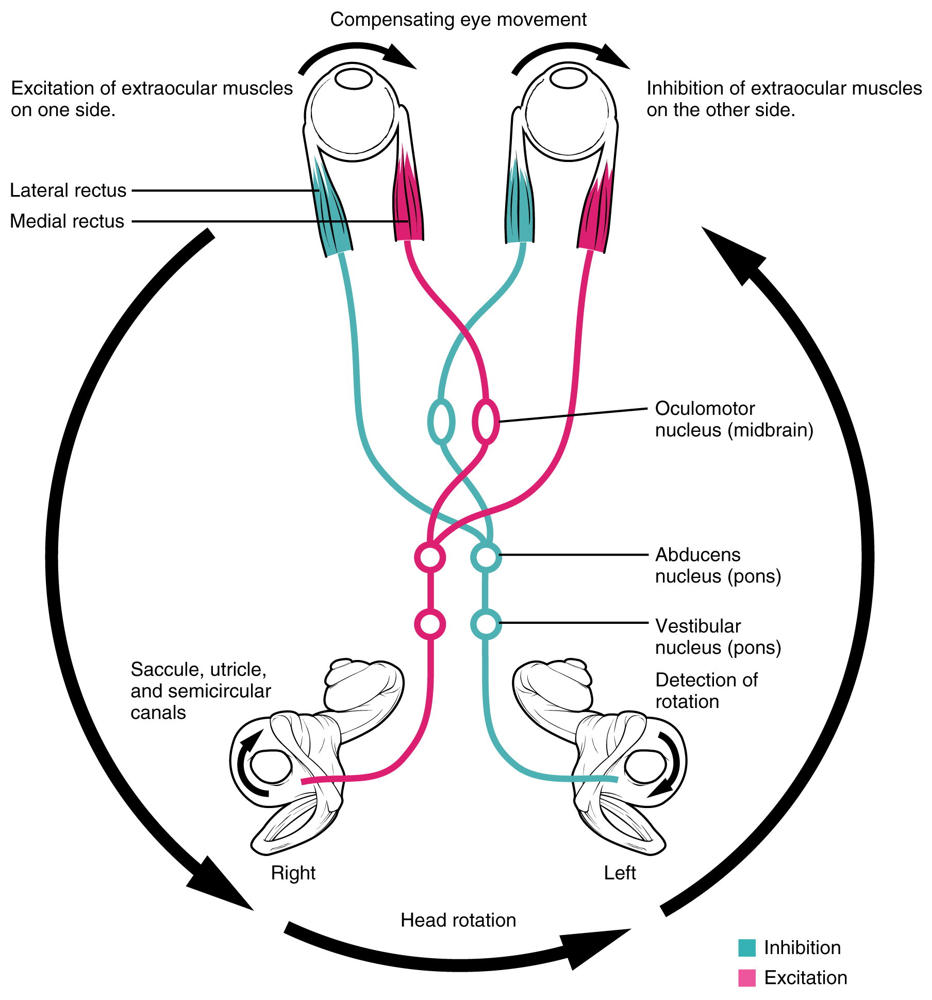
The connections of the optic nerve are more complicated than those of other cranial nerves. Instead of the connections being between each eye and the brain, visual information is segregated between the left and right sides of the visual field. In addition, some of the information from one side of the visual field projects to the opposite side of the brain. Within each eye, the axons projecting from the medial side of the retina decussate at theoptic chiasm. For example, the axons from the medial retina of the left eye cross over to the right side of the brain at the optic chiasm. However, within each eye, the axons projecting from the lateral side of the retina do not decussate. For example, the axons from the lateral retina of the right eye project back to the right side of the brain. Therefore the left field of view of each eye is processed on the right side of the brain, whereas the right field of view of each eye is processed on the left side of the brain (Figure \(\PageIndex{4}\)).
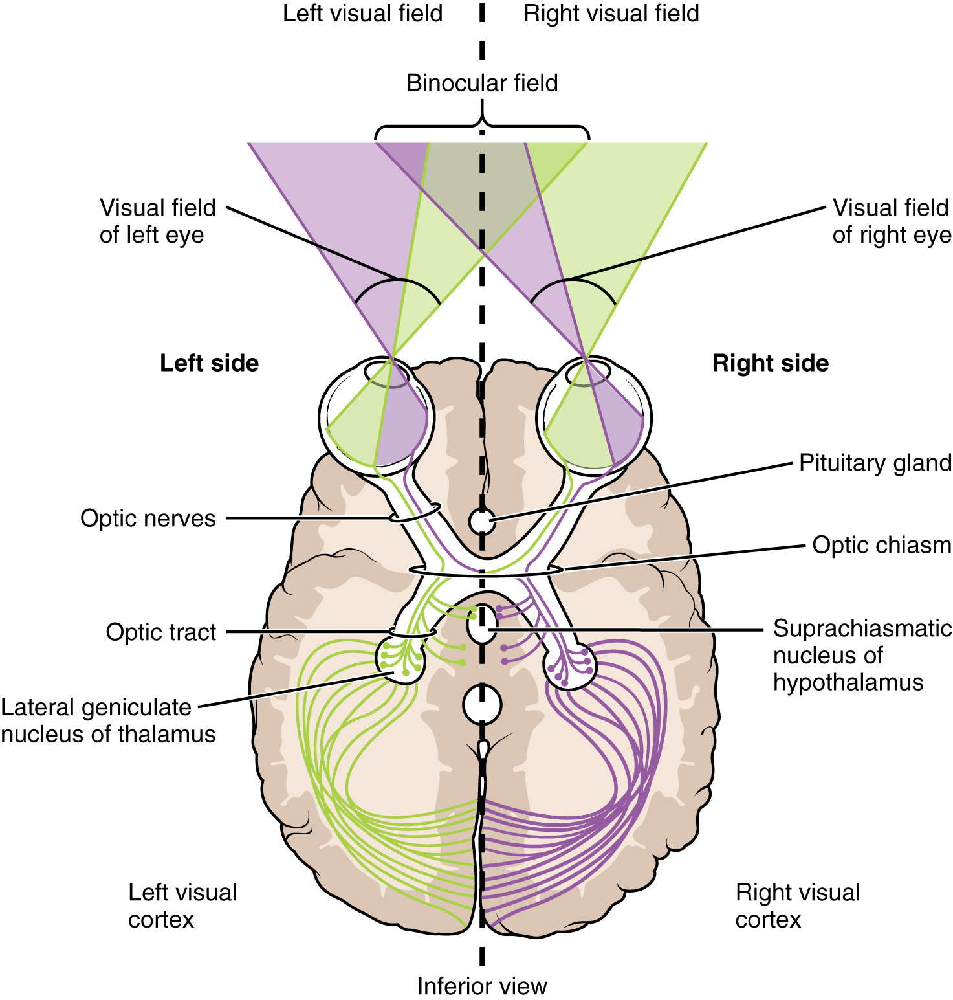
A unique clinical presentation that relates to this anatomic arrangement is the loss of lateral peripheral vision, known as bilateral hemianopia. This is different from “tunnel vision” because the superior and inferior peripheral fields are not lost. Visual field deficits can be disturbing for a patient, but in this case, the cause is not within the visual system itself. A growth of the pituitary gland presses against the optic chiasm and interferes with signal transmission. However, the axons projecting to the same side of the brain are unaffected. Therefore, the patient loses the outermost areas of their field of vision and cannot see objects to their right and left.
Extending from the optic chiasm, the axons of the visual system are referred to as theoptic tractinstead of the optic nerve. The optic tract has three major targets, two in the diencephalon and one in the midbrain. The connection between the eyes and diencephalon is demonstrated during development, in which the neural tissue of the retina differentiates from that of the diencephalon by the growth of the secondary vesicles. The connections of the retina into the CNS are a holdover from this developmental association. The majority of the connections of the optic tract are to the thalamus—specifically, thelateral geniculate nucleus. Axons from this nucleus then project to the visual cortex of the cerebrum, located in the occipital lobe. Another target of the optic tract is the superior colliculus.
In addition, a very small number of RGC axons project from the optic chiasm to thesuprachiasmatic nucleusof the hypothalamus. These RGCs are photosensitive, in that they respond to the presence or absence of light. Unlike the photoreceptors, however, these photosensitive RGCs cannot be used to perceive images. By simply responding to the absence or presence of light, these RGCs can send information about day length. The perceived proportion of sunlight to darkness establishes thecircadian rhythmof our bodies, allowing certain physiological events to occur at approximately the same time every day.
The diencephalon is beneath the cerebrum and includes the thalamus and hypothalamus. In the somatic nervous system, the thalamus is an important relay for communication between the cerebrum and the rest of the nervous system. The hypothalamus has both somatic and autonomic functions. In addition, the hypothalamus communicates with the limbic system, which controls emotions and memory functions.
Sensory input to the thalamus comes from most of the special senses and ascending somatosensory tracts. Each sensory system is relayed through a particular nucleus in the thalamus. The thalamus is a required transfer point for most sensory tracts that reach the cerebral cortex, where conscious sensory perception begins. The one exception to this rule is the olfactory system. The olfactory tract axons from the olfactory bulb project directly to the cerebral cortex, along with the limbic system and hypothalamus.
The thalamus is a collection of several nuclei that can be categorized into three anatomical groups. White matter running through the thalamus defines the three major regions of the thalamus, which are an anterior nucleus, a medial nucleus, and a lateral group of nuclei. The anterior nucleus serves as a relay between the hypothalamus and the emotion and memory-producing limbic system. The medial nuclei serve as a relay for information from the limbic system and basal ganglia to the cerebral cortex. This allows memory creation during learning, but also determines alertness. The special and somatic senses connect to the lateral nuclei, where their information is relayed to the appropriate sensory cortex of the cerebrum.
As described earlier, many of the sensory axons are positioned in the same way as their corresponding receptor cells in the body. This allows identification of the position of a stimulus on the basis of which receptor cells are sending information. The cerebral cortex also maintains this sensory topography in the particular areas of the cortex that correspond to the position of the receptor cells. The somatosensory cortex provides an example in which, in essence, the locations of the somatosensory receptors in the body are mapped onto the somatosensory cortex. This mapping is often depicted using asensory homunculus(Figure \(\PageIndex{5}\)).
The term homunculus comes from the Latin word for “little man” and refers to a map of the human body that is laid across a portion of the cerebral cortex. In the somatosensory cortex, the external genitals, feet, and lower legs are represented on the medial face of the gyrus within the longitudinal fissure. As the gyrus curves out of the fissure and along the surface of the parietal lobe, the body map continues through the thighs, hips, trunk, shoulders, arms, and hands. The head and face are just lateral to the fingers as the gyrus approaches the lateral sulcus. The representation of the body in this topographical map is medial to lateral from the lower to upper body. It is a continuation of the topographical arrangement seen in the dorsal column system, where axons from the lower body are carried in the fasciculus gracilis, whereas axons from the upper body are carried in the fasciculus cuneatus. As the dorsal column system continues into the medial lemniscus, these relationships are maintained. Also, the head and neck axons running from the trigeminal nuclei to the thalamus run adjacent to the upper body fibers. The connections through the thalamus maintain topography such that the anatomic information is preserved. Note that this correspondence does not result in a perfectly miniature scale version of the body, but rather exaggerates the more sensitive areas of the body, such as the fingers and lower face. Less sensitive areas of the body, such as the shoulders and back, are mapped to smaller areas on the cortex.

Likewise, the topographic relationship between the retina and the visual cortex is maintained throughout the visual pathway. The visual field is projected onto the two retinae, as described above, with sorting at the optic chiasm. The right peripheral visual field falls on the medial portion of the right retina and the lateral portion of the left retina. The right medial retina then projects across the midline through the optic chiasm. This results in the right visual field being processed in the left visual cortex. Likewise, the left visual field is processed in the right visual cortex (see Figure 14.22). Though the chiasm is helping to sort right and left visual information, superior and inferior visual information is maintained topographically in the visual pathway. Light from the superior visual field falls on the inferior retina, and light from the inferior visual field falls on the superior retina. This topography is maintained such that the superior region of the visual cortex processes the inferior visual field and vice versa. Therefore, the visual field information is inverted and reversed as it enters the visual cortex—up is down, and left is right. However, the cortex processes the visual information such that the final conscious perception of the visual field is correct. The topographic relationship is evident in that information from the foveal region of the retina is processed in the center of the primary visual cortex. Information from the peripheral regions of the retina are correspondingly processed toward the edges of the visual cortex. Similar to the exaggerations in the sensory homunculus of the somatosensory cortex, the foveal-processing area of the visual cortex is disproportionately larger than the areas processing peripheral vision.
In an experiment performed in the 1960s, subjects wore prism glasses so that the visual field was inverted before reaching the eye. On the first day of the experiment, subjects would duck when walking up to a table, thinking it was suspended from the ceiling. However, after a few days of acclimation, the subjects behaved as if everything were represented correctly. Therefore, the visual cortex is somewhat flexible in adapting to the information it receives from our eyes (Figure \(\PageIndex{6}\)).
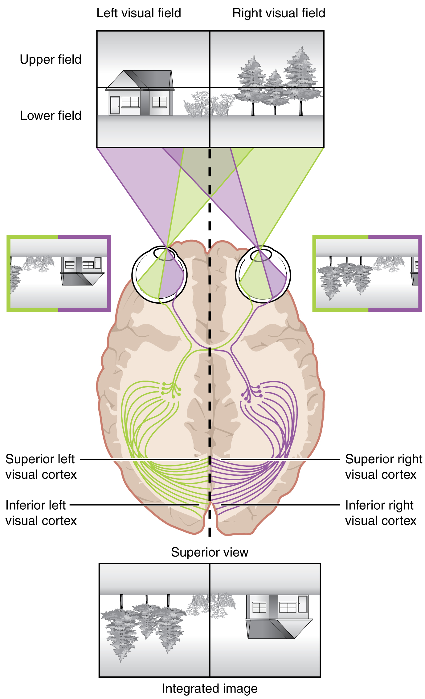
The cortex has been described as having specific regions that are responsible for processing specific information; there is the visual cortex, somatosensory cortex, gustatory cortex, etc. However, our experience of these senses is not divided. Instead, we experience what can be referred to as a seamless percept. Our perceptions of the various sensory modalities—though distinct in their content—are integrated by the brain so that we experience the world as a continuous whole.
In the cerebral cortex, sensory processing begins at theprimary sensory cortex, then proceeds to anassociation area, and finally, into amultimodal integration area. For example, the visual pathway projects from the retinae through the thalamus to the primary visual cortex in the occipital lobe. This area is primarily in the medial wall within the longitudinal fissure. Here, visual stimuli begin to be recognized as basic shapes. Edges of objects are recognized and built into more complex shapes. Also, inputs from both eyes are compared to extract depth information. Because of the overlapping field of view between the two eyes, the brain can begin to estimate the distance of stimuli based onbinocular depth cues.
Watch this video to learn more about how the brain perceives 3-D motion. Similar to how retinal disparity offers 3-D moviegoers a way to extract 3-D information from the two-dimensional visual field projected onto the retina, the brain can extract information about movement in space by comparing what the two eyes see. If movement of a visual stimulus is leftward in one eye and rightward in the opposite eye, the brain interprets this as movement toward (or away) from the face along the midline. If both eyes see an object moving in the same direction, but at different rates, what would that mean for spatial movement?
#### Depth Perception, 3-D Movies, and Optical Illusions
The visual field is projected onto the retinal surface, where photoreceptors transduce light energy into neural signals for the brain to interpret. The retina is a two-dimensional surface, so it does not encode three-dimensional information. However, we can perceive depth. How is that accomplished?
Two ways in which we can extract depth information from the two-dimensional retinal signal are based on monocular cues and binocular cues, respectively. Monocular depth cues are those that are the result of information within the two-dimensional visual field. One object that overlaps another object has to be in front. Relative size differences are also a cue. For example, if a basketball appears larger than the basket, then the basket must be further away. On the basis of experience, we can estimate how far away the basket is. Binocular depth cues compare information represented in the two retinae because they do not see the visual field exactly the same.
The centers of the two eyes are separated by a small distance, which is approximately 6 to 6.5 cm in most people. Because of this offset, visual stimuli do not fall on exactly the same spot on both retinae unless we are fixated directly on them and they fall on the fovea of each retina. All other objects in the visual field, either closer or farther away than the fixated object, will fall on different spots on the retina. When vision is fixed on an object in space, closer objects will fall on the lateral retina of each eye, and more distant objects will fall on the medial retina of either eye (Figure \(\PageIndex{7}\)). This is easily observed by holding a finger up in front of your face as you look at a more distant object. You will see two images of your finger that represent the two disparate images that are falling on either retina.
These depth cues, both monocular and binocular, can be exploited to make the brain think there are three dimensions in two-dimensional information. This is the basis of 3-D movies. The projected image on the screen is two dimensional, but it has disparate information embedded in it. The 3-D glasses that are available at the theater filter the information so that only one eye sees one version of what is on the screen, and the other eye sees the other version. If you take the glasses off, the image on the screen will have varying amounts of blur because both eyes are seeing both layers of information, and the third dimension will not be evident. Some optical illusions can take advantage of depth cues as well, though those are more often using monocular cues to fool the brain into seeing different parts of the scene as being at different depths.

There are two main regions that surround the primary cortex that are usually referred to as areas V2 and V3 (the primary visual cortex is area V1). These surrounding areas are the visual association cortex. The visual association regions develop more complex visual perceptions by adding color and motion information. The information processed in these areas is then sent to regions of the temporal and parietal lobes. Visual processing has two separate streams of processing: one into the temporal lobe and one into the parietal lobe. These are the ventral and dorsal streams, respectively (Figure \(\PageIndex{8}\)). Theventral streamidentifies visual stimuli and their significance. Because the ventral stream uses temporal lobe structures, it begins to interact with the non-visual cortex and may be important in visual stimuli becoming part of memories. Thedorsal streamlocates objects in space and helps in guiding movements of the body in response to visual inputs. The dorsal stream enters the parietal lobe, where it interacts with somatosensory cortical areas that are important for our perception of the body and its movements. The dorsal stream can then influence frontal lobe activity where motor functions originate.
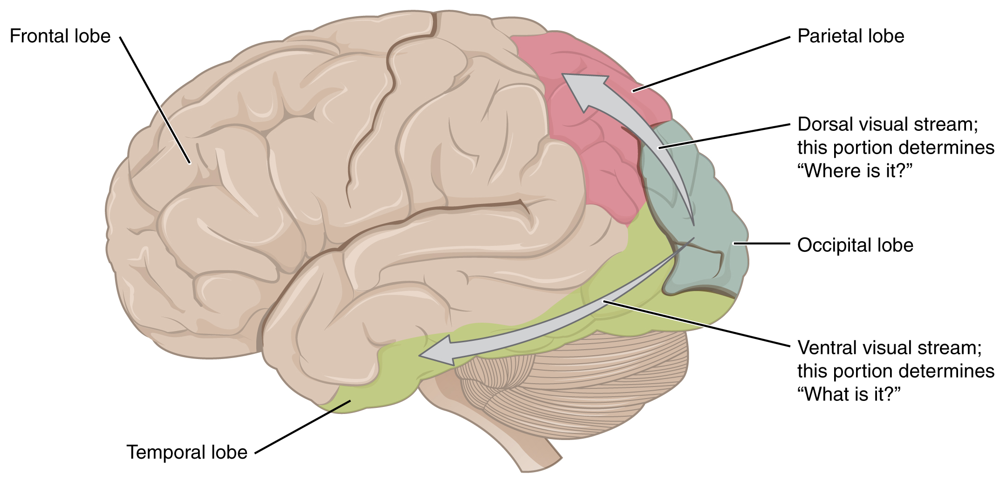
#### Brain: Prosopagnosia
The failures of sensory perception can be unusual and debilitating. A particular sensory deficit that inhibits an important social function of humans is prosopagnosia, or face blindness. The word comes from the Greek words prosopa, that means “faces,” and agnosia, that means “not knowing.” Some people may feel that they cannot recognize people easily by their faces. However, a person with prosopagnosia cannot recognize the most recognizable people in their respective cultures. They would not recognize the face of a celebrity, an important historical figure, or even a family member like their mother. They may not even recognize their own face.
Prosopagnosia can be caused by trauma to the brain, or it can be present from birth. The exact cause of proposagnosia and the reason that it happens to some people is unclear. A study of the brains of people born with the deficit found that a specific region of the brain, the anterior fusiform gyrus of the temporal lobe, is often underdeveloped. This region of the brain is concerned with the recognition of visual stimuli and its possible association with memories. Though the evidence is not yet definitive, this region is likely to be where facial recognition occurs.
Though this can be a devastating condition, people who suffer from it can get by—often by using other cues to recognize the people they see. Often, the sound of a person’s voice, or the presence of unique cues such as distinct facial features (a mole, for example) or hair color can help the sufferer recognize a familiar person. In the video on prosopagnosia provided in this section, a woman is shown having trouble recognizing celebrities, family members, and herself. In some situations, she can use other cues to help her recognize faces.
The inability to recognize people by their faces is a troublesome problem. It can be caused by trauma, or it may be inborn. Watch this video to learn more about a person who lost the ability to recognize faces as the result of an injury. She cannot recognize the faces of close family members or herself. What other information can a person suffering from prosopagnosia use to figure out whom they are seeing?
📖 OpenStax Anatomy & Physiology 2e, Section 14.3. openstax.org · CC BY 4.0
- List the components of the basic processing stream for the motor system
- Describe the pathway of descending motor commands from the cortex to the skeletal muscles
- Compare different descending pathways, both by structure and function
- Explain the initiation of movement from the neurological connections
- Describe several reflex arcs and their functional roles
The defining characteristic of the somatic nervous system is that it controls skeletal muscles. Somatic senses inform the nervous system about the external environment, but the response to that is through voluntary muscle movement. The term “voluntary” suggests that there is a conscious decision to make a movement. However, some aspects of the somatic system use voluntary muscles without conscious control. One example is the ability of our breathing to switch to unconscious control while we are focused on another task. However, the muscles that are responsible for the basic process of breathing are also utilized for speech, which is entirely voluntary.
Let’s start with sensory stimuli that have been registered through receptor cells and the information relayed to the CNS along ascending pathways. In the cerebral cortex, the initial processing of sensory perception progresses to associative processing and then integration in multimodal areas of cortex. These levels of processing can lead to the incorporation of sensory perceptions into memory, but more importantly, they lead to a response. The completion of cortical processing through the primary, associative, and integrative sensory areas initiates a similar progression of motor processing, usually in different cortical areas.
Whereas the sensory cortical areas are located in the occipital, temporal, and parietal lobes, motor functions are largely controlled by the frontal lobe (See Figure 13.7). The most anterior regions of the frontal lobe—the prefrontal areas—are important forexecutive functions, which are those cognitive functions that lead to goal-directed behaviors. These higher cognitive processes includeworking memory, which has been called a “mental scratch pad,” that can help organize and represent information that is not in the immediate environment. The prefrontal lobe is responsible for aspects of attention, such as inhibiting distracting thoughts and actions so that a person can focus on a goal and direct behavior toward achieving that goal.
The functions of the prefrontal cortex are integral to the personality of an individual, because it is largely responsible for what a person intends to do and how they accomplish those plans. A famous case of damage to the prefrontal cortex is that of Phineas Gage, dating back to 1848. He was a railroad worker who had a metal spike impale his prefrontal cortex (Figure \(\PageIndex{1}\)). He survived the accident, but according to second-hand accounts, his personality changed drastically. Friends described him as no longer acting like himself. Whereas he was a hardworking, amiable man before the accident, he turned into an irritable, temperamental, and lazy man after the accident. Many of the accounts of his change may have been inflated in the retelling, and some behavior was likely attributable to alcohol used as a pain medication. However, the accounts suggest that some aspects of his personality did change. Also, there is new evidence that though his life changed dramatically, he was able to become a functioning stagecoach driver, suggesting that the brain has the ability to recover even from major trauma such as this.
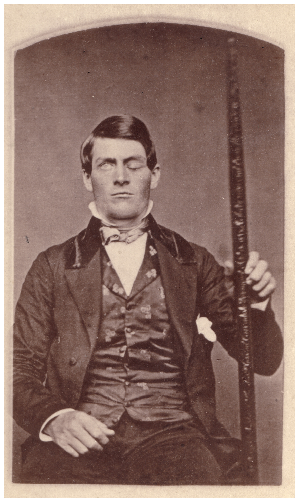
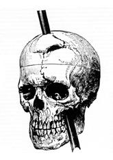
#### Secondary Motor Cortices
In generating motor responses, the executive functions of the prefrontal cortex will need to initiate actual movements. One way to define the prefrontal area is any region of the frontal lobe that does not elicit movement when electrically stimulated. These are primarily in the anterior part of the frontal lobe. The regions of the frontal lobe that remain are the regions of the cortex that produce movement. The prefrontal areas project into the secondary motor cortices, which include thepremotor cortexand thesupplemental motor area.
Two important regions that assist in planning and coordinating movements are located adjacent to the primary motor cortex. The premotor cortex is more lateral, whereas the supplemental motor area is more medial and superior. The premotor area aids in controlling movements of the core muscles to maintain posture during movement, whereas the supplemental motor area is hypothesized to be responsible for planning and coordinating movement. The supplemental motor area also manages sequential movements that are based on prior experience (that is, learned movements). Neurons in these areas are most active leading up to the initiation of movement. For example, these areas might prepare the body for the movements necessary to drive a car in anticipation of a traffic light changing.
Adjacent to these two regions are two specialized motor planning centers. Thefrontal eye fieldsare responsible for moving the eyes in response to visual stimuli. There are direct connections between the frontal eye fields and the superior colliculus. Also, anterior to the premotor cortex and primary motor cortex isBroca’s area. This area is responsible for controlling movements of the structures of speech production. The area is named after a French surgeon and anatomist who studied patients who could not produce speech. They did not have impairments to understanding speech, only to producing speech sounds, suggesting a damaged or underdeveloped Broca’s area.
#### Primary Motor Cortex
The primary motor cortex is located in the precentral gyrus of the frontal lobe. A neurosurgeon, Walter Penfield, described much of the basic understanding of the primary motor cortex by electrically stimulating the surface of the cerebrum. Penfield would probe the surface of the cortex while the patient was only under local anesthesia so that he could observe responses to the stimulation. This led to the belief that the precentral gyrus directly stimulated muscle movement. We now know that the primary motor cortex receives input from several areas that aid in planning movement, and its principle output stimulates spinal cord neurons to stimulate skeletal muscle contraction.
The primary motor cortex is arranged in a similar fashion to the primary somatosensory cortex, in that it has a topographical map of the body, creating a motor homunculus (see Figure 14.23). The neurons responsible for musculature in the feet and lower legs are in the medial wall of the precentral gyrus, with the thighs, trunk, and shoulder at the crest of the longitudinal fissure. The hand and face are in the lateral face of the gyrus. Also, the relative space allotted for the different regions is exaggerated in muscles that have greater enervation. The greatest amount of cortical space is given to muscles that perform fine, agile movements, such as the muscles of the fingers and the lower face. The “power muscles” that perform coarser movements, such as the buttock and back muscles, occupy much less space on the motor cortex.
The motor output from the cortex descends into the brain stem and to the spinal cord to control the musculature through motor neurons. Neurons located in the primary motor cortex, namedBetz cells, are large cortical neurons that synapse with lower motor neurons in the brain stem or in the spinal cord. The two descending pathways travelled by the axons of Betz cells are thecorticobulbar tractand thecorticospinal tract, respectively. Both tracts are named for their origin in the cortex and their targets—either the brain stem (the term “bulbar” refers to the brain stem as the bulb, or enlargement, at the top of the spinal cord) or the spinal cord.
These two descending pathways are responsible for the conscious or voluntary movements of skeletal muscles. Any motor command from the primary motor cortex is sent down the axons of the Betz cells to activate lower motor neurons in either the cranial motor nuclei or in the ventral horn of the spinal cord. The axons of the corticobulbar tract are ipsilateral, meaning they project from the cortex to the motor nucleus on the same side of the nervous system. Conversely, the axons of the corticospinal tract are largely contralateral, meaning that they cross the midline of the brain stem or spinal cord and synapse on the opposite side of the body. Therefore, the right motor cortex of the cerebrum controls muscles on the left side of the body, and vice versa.
The corticospinal tract descends from the cortex through the deep white matter of the cerebrum. It then passes between the caudate nucleus and putamen of the basal nuclei as a bundle called theinternal capsule. The tract then passes through the midbrain as thecerebral peduncles, after which it burrows through the pons. Upon entering the medulla, the tracts make up the large white matter tract referred to as thepyramids(Figure \(\PageIndex{2}\)). The defining landmark of the medullary-spinal border is thepyramidal decussation, which is where most of the fibers in the corticospinal tract cross over to the opposite side of the brain. At this point, the tract separates into two parts, which have control over different domains of the musculature.
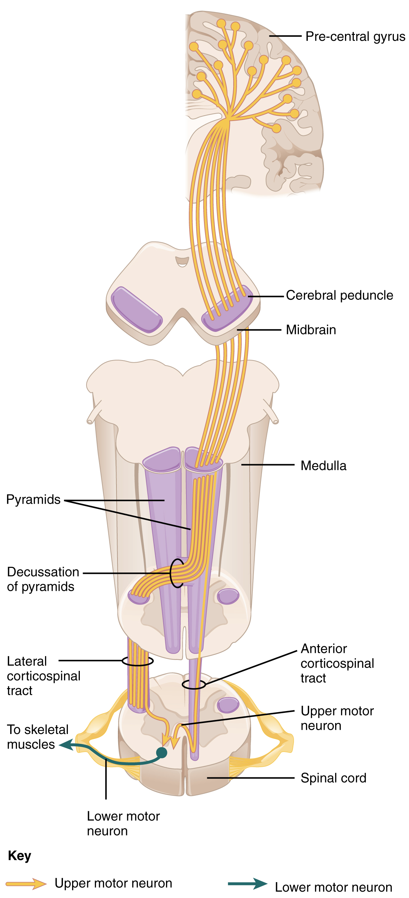
#### Appendicular Control
Thelateral corticospinal tractis composed of the fibers that cross the midline at the pyramidal decussation (see Figure \(\PageIndex{2}\)). The axons cross over from the anterior position of the pyramids in the medulla to the lateral column of the spinal cord. These axons are responsible for controlling appendicular muscles.
This influence over the appendicular muscles means that the lateral corticospinal tract is responsible for moving the muscles of the arms and legs. The ventral horn in both the lower cervical spinal cord and the lumbar spinal cord both have wider ventral horns, representing the greater number of muscles controlled by these motor neurons. Thecervical enlargementis particularly large because there is greater control over the fine musculature of the upper limbs, particularly of the fingers. Thelumbar enlargementis not as significant in appearance because there is less fine motor control of the lower limbs.
Theanterior corticospinal tractis responsible for controlling the muscles of the body trunk (see Figure 14.28). These axons do not decussate in the medulla. Instead, they remain in an anterior position as they descend the brain stem and enter the spinal cord. These axons then travel to the spinal cord level at which they synapse with a lower motor neuron. Upon reaching the appropriate level, the axons decussate, entering the ventral horn on the opposite side of the spinal cord from which they entered. In the ventral horn, these axons synapse with their corresponding lower motor neurons. The lower motor neurons are located in the medial regions of the ventral horn, because they control the axial muscles of the trunk.
Because movements of the body trunk involve both sides of the body, the anterior corticospinal tract is not entirely contralateral. Some collateral branches of the tract will project into the ipsilateral ventral horn to control synergistic muscles on that side of the body, or to inhibit antagonistic muscles through interneurons within the ventral horn. Through the influence of both sides of the body, the anterior corticospinal tract can coordinate postural muscles in broad movements of the body. These coordinating axons in the anterior corticospinal tract are often considered bilateral, as they are both ipsilateral and contralateral.
Watch this video to learn more about the descending motor pathway for the somatic nervous system. The autonomic connections are mentioned, which are covered in another chapter. From this brief video, only some of the descending motor pathway of the somatic nervous system is described. Which division of the pathway is described and which division is left out?
Other descending connections between the brain and the spinal cord are called theextrapyramidal system. The name comes from the fact that this system is outside the corticospinal pathway, which includes the pyramids in the medulla. A few pathways originating from the brain stem contribute to this system.
Thetectospinal tractprojects from the midbrain to the spinal cord and is important for postural movements that are driven by the superior colliculus. The name of the tract comes from an alternate name for the superior colliculus, which is the tectum. Thereticulospinal tractconnects the reticular system, a diffuse region of gray matter in the brain stem, with the spinal cord. This tract influences trunk and proximal limb muscles related to posture and locomotion. The reticulospinal tract also contributes to muscle tone and influences autonomic functions. Thevestibulospinal tractconnects the brain stem nuclei of the vestibular system with the spinal cord. This allows posture, movement, and balance to be modulated on the basis of equilibrium information provided by the vestibular system.
The pathways of the extrapyramidal system are influenced by subcortical structures. For example, connections between the secondary motor cortices and the extrapyramidal system modulate spine and cranium movements. The basal nuclei, which are important for regulating movement initiated by the CNS, influence the extrapyramidal system as well as its thalamic feedback to the motor cortex.
The conscious movement of our muscles is more complicated than simply sending a single command from the precentral gyrus down to the proper motor neurons. During the movement of any body part, our muscles relay information back to the brain, and the brain is constantly sending “revised” instructions back to the muscles. The cerebellum is important in contributing to the motor system because it compares cerebral motor commands with proprioceptive feedback. The corticospinal fibers that project to the ventral horn of the spinal cord have branches that also synapse in the pons, which project to the cerebellum. Also, the proprioceptive sensations of the dorsal column system have a collateral projection to the medulla that projects to the cerebellum. These two streams of information are compared in the cerebellar cortex. Conflicts between the motor commands sent by the cerebrum and body position information provided by the proprioceptors cause the cerebellum to stimulate thered nucleusof the midbrain. The red nucleus then sends corrective commands to the spinal cord along therubrospinal tract. The name of this tract comes from the word for red that is seen in the English word “ruby.”
A good example of how the cerebellum corrects cerebral motor commands can be illustrated by walking in water. An original motor command from the cerebrum to walk will result in a highly coordinated set of learned movements. However, in water, the body cannot actually perform a typical walking movement as instructed. The cerebellum can alter the motor command, stimulating the leg muscles to take larger steps to overcome the water resistance. The cerebellum can make the necessary changes through the rubrospinal tract. Modulating the basic command to walk also relies on spinal reflexes, but the cerebellum is responsible for calculating the appropriate response. When the cerebellum does not work properly, coordination and balance are severely affected. The most dramatic example of this is during the overconsumption of alcohol. Alcohol inhibits the ability of the cerebellum to interpret proprioceptive feedback, making it more difficult to coordinate body movements, such as walking a straight line, or guide the movement of the hand to touch the tip of the nose.
Visitthis siteto read about an elderly woman who starts to lose the ability to control fine movements, such as speech and the movement of limbs. Many of the usual causes were ruled out. It was not a stroke, Parkinson’s disease, diabetes, or thyroid dysfunction. The next most obvious cause was medication, so her pharmacist had to be consulted. The side effect of a drug meant to help her sleep had resulted in changes in motor control. What regions of the nervous system are likely to be the focus of haloperidol side effects?
The somatic nervous system provides output strictly to skeletal muscles. The lower motor neurons, which are responsible for the contraction of these muscles, are found in the ventral horn of the spinal cord. These large, multipolar neurons have a corona of dendrites surrounding the cell body and an axon that extends out of the ventral horn. This axon travels through the ventral nerve root to join the emerging spinal nerve. The axon is relatively long because it needs to reach muscles in the periphery of the body. The diameters of cell bodies may be on the order of hundreds of micrometers to support the long axon; some axons are a meter in length, such as the lumbar motor neurons that innervate muscles in the first digits of the feet.
The axons will also branch to innervate multiple muscle fibers. Together, the motor neuron and all the muscle fibers that it controls make up a motor unit. Motor units vary in size. Some may contain up to 1000 muscle fibers, such as in the quadriceps, or they may only have 10 fibers, such as in an extraocular muscle. The number of muscle fibers that are part of a motor unit corresponds to the precision of control of that muscle. Also, muscles that have finer motor control have more motor units connecting to them, and this requires a larger topographical field in the primary motor cortex.
Motor neuron axons connect to muscle fibers at a neuromuscular junction. This is a specialized synaptic structure at which multiple axon terminals synapse with the muscle fiber sarcolemma. The synaptic end bulbs of the motor neurons secrete acetylcholine, which binds to receptors on the sarcolemma. The binding of acetylcholine opens ligand-gated ion channels, increasing the movement of cations across the sarcolemma. This depolarizes the sarcolemma, initiating muscle contraction. Whereas other synapses result in graded potentials that must reach a threshold in the postsynaptic target, activity at the neuromuscular junction reliably leads to muscle fiber contraction with every nerve impulse received from a motor neuron. However, the strength of contraction and the number of fibers that contract can be affected by the frequency of the motor neuron impulses.
This chapter began by introducing reflexes as an example of the basic elements of the somatic nervous system. Simple somatic reflexes do not include the higher centers discussed for conscious or voluntary aspects of movement. Reflexes can be spinal or cranial, depending on the nerves and central components that are involved. The example described at the beginning of the chapter involved heat and pain sensations from a hot stove causing withdrawal of the arm through a connection in the spinal cord that leads to contraction of the biceps brachii. The description of this withdrawal reflex was simplified, for the sake of the introduction, to emphasize the parts of the somatic nervous system. But to consider reflexes fully, more attention needs to be given to this example.
As you withdraw your hand from the stove, you do not want to slow that reflex down. As the biceps brachii contracts, the antagonistic triceps brachii needs to relax. Because the neuromuscular junction is strictly excitatory, the biceps will contract when the motor nerve is active. Skeletal muscles do not actively relax. Instead the motor neuron needs to “quiet down,” or be inhibited. In the hot-stove withdrawal reflex, this occurs through an interneuron in the spinal cord. The interneuron’s cell body is located in the dorsal horn of the spinal cord. The interneuron receives a synapse from the axon of the sensory neuron that detects that the hand is being burned. In response to this stimulation from the sensory neuron, the interneuron then inhibits the motor neuron that controls the triceps brachii. This is done by releasing a neurotransmitter or other signal that hyperpolarizes the motor neuron connected to the triceps brachii, making it less likely to initiate an action potential. With this motor neuron being inhibited, the triceps brachii relaxes. Without the antagonistic contraction, withdrawal from the hot stove is faster and keeps further tissue damage from occurring.
Another example of a withdrawal reflex occurs when you step on a painful stimulus, like a tack or a sharp rock. The nociceptors that are activated by the painful stimulus activate the motor neurons responsible for contraction of the tibialis anterior muscle. This causes dorsiflexion of the foot. An inhibitory interneuron, activated by a collateral branch of the nociceptor fiber, will inhibit the motor neurons of the gastrocnemius and soleus muscles to cancel plantar flexion. An important difference in this reflex is that plantar flexion is most likely in progress as the foot is pressing down onto the tack. Contraction of the tibialis anterior is not the most important aspect of the reflex, as continuation of plantar flexion will result in further damage from stepping onto the tack.
Another type of reflex is astretch reflex. In this reflex, when a skeletal muscle is stretched, a muscle spindle receptor is activated. The axon from this receptor structure will cause direct contraction of the muscle. A collateral of the muscle spindle fiber will also inhibit the motor neuron of the antagonist muscles. The reflex helps to maintain muscles at a constant length. A common example of this reflex is the knee jerk that is elicited by a rubber hammer struck against the patellar ligament in a physical exam.
A specialized reflex to protect the surface of the eye is thecorneal reflex, or the eye blink reflex. When the cornea is stimulated by a tactile stimulus, or even by bright light in a related reflex, blinking is initiated. The sensory component travels through the trigeminal nerve, which carries somatosensory information from the face, or through the optic nerve, if the stimulus is bright light. The motor response travels through the facial nerve and innervates the orbicularis oculi on the same side. This reflex is commonly tested during a physical exam using an air puff or a gentle touch of a cotton-tipped applicator.
Watch this video to learn more about the reflex arc of the corneal reflex. When the right cornea senses a tactile stimulus, what happens to the left eye? Explain your answer.
Watch this video to learn more about newborn reflexes. Newborns have a set of reflexes that are expected to have been crucial to survival before the modern age. These reflexes disappear as the baby grows, as some of them may be unnecessary as they age. The video demonstrates a reflex called the Babinski reflex, in which the foot flexes dorsally and the toes splay out when the sole of the foot is lightly scratched. This is normal for newborns, but it is a sign of reduced myelination of the spinal tract in adults. Why would this reflex be a problem for an adult?
📖 OpenStax Anatomy & Physiology 2e, Section 14.4. openstax.org · CC BY 4.0
| Section | Title |
|---|---|
| 14.2 | 14.2: Sensory Perception |
| 14.3 | 14.3: Central Processing |
| 14.4 | 14.4: Motor Processing |